1. 序論
1.1. 目標と視野
“ウェブのための文字モデル” の目標は、W3C が目指す世界共通のアクセス — W3C goal of universal access に則り、すべての人々から，彼らの 言語／用字系（用字, 文字体系）／表記体系／文化的慣習 に関わらず、ウェブ（ World Wide Web ）を利用し易くすることである。 この目標に欠かせない基本的な条件は、世界で利用されている文字を，矛盾無く定義しつつ, 理解し易い方法により，伝送／処理を行えるようにすることである。 The goal of the Character Model for the World Wide Web is to facilitate use of the Web by all people, regardless of their language, script, writing system, and cultural conventions, in accordance with the W3C goal of universal access. One basic prerequisite to achieve this goal is to be able to transmit and process the characters used around the world in a well-defined and well-understood way.
この仕様の主な読者には、 W3C 仕様の開発者が想定されている。 この仕様あるいはその一部分は、他の W3C 仕様から参照され得る。 これは、他の仕様とともに W3C 仕様に対する適合性基準を定める。 The main target audience of this specification is W3C specification developers. This specification and parts of it can be referenced from other W3C specifications. It defines conformance criteria for W3C specifications as well as other specifications.
この仕様が想定している他の読者には、 ソフトウェア開発者／内容開発者／ W3C の外側で策定される仕様の作成者 も含まれている。 ソフトウェア開発者と内容開発者は W3C 仕様を実装し, 利用する。 この仕様は、 W3C 仕様を実装し, 利用する，実装（ソフトウェア）, および内容に対し、いくつかの適合性基準を定める。 これはまた、ソフトウェア開発者や内容開発者達が， W3C 仕様に含まれる文字に関する規定を理解するための助けにもなる。 Other audiences of this specification include software developers, content developers, and authors of specifications outside the W3C. Software developers and content developers implement and use W3C specifications. This specification defines some conformance criteria for implementations (software) and content that implement and use W3C specifications. It also helps software developers and content developers to understand the character-related provisions in W3C specifications.
この仕様に述べられる文字モデルは、 ウェブ上のテキスト操作を，一貫性を備えた, 相互運用可能なものにするための 共通の基準を、 仕様の作成者／ソフトウェア開発者／内容開発者 に提供する。 これら三者の協同により，より国際的なウェブを築くことが可能になる。 The character model described in this specification provides authors of specifications, software developers, and content developers with a common reference for consistent, interoperable text manipulation on the World Wide Web. Working together, these three groups can build a more international Web.
この “ウェブのための文字モデル” — Character Model for the World Wide Web の根本原則 編で取り挙げられる論題には次のものがある： 語［ “文字”, “符号化方式” “文字列” ］の用法, 基準処理モデル, 文字符号化方式の選定と識別, 文字エスケープ法, 文字列の付番 Topics addressed in this part of the Character Model for the World Wide Web include use of the terms 'character', 'encoding' and 'string', a reference processing model, choice and identification of character encodings, character escaping, and string indexing.
Character Model の他の部分は、正規化と文字列の同一性合致検出（ [CharNorm] ）と IRI （ Internationalized Resource Identifiers ）の変換（ [CharIRI] ）からなる。 Other parts of the Character Model address normalization and string identity matching ([CharNorm]) and Internationalized Resource Identifiers (IRI) conventions ([CharIRI]).
まだ全く, あるいは ほんの触りしか取り挙げられてない論題には、曖昧照合や, 言語のタグ付けなどがある。 これらの論題の一部については、この仕様の将来バージョンにて，解決されるものと期待される。 Topics as yet not addressed or barely touched include fuzzy matching, and language tagging. Some of these topics may be addressed in a future version of this specification.
モデルの中核を担うのは、 Unicode 標準 [Unicode] と ISO/IEC 10646 [ISO/IEC 10646] の協同により定義された， Universal Character Set （ UCS ）である。 この文書は、 Universal Character Set の同義語として，語 Unicode を用いる。 モデルは、世界の用字系（および様々なプラットフォーム）で作成されたウェブ文書を、世界のウェブ利用者の間で，交換, 読み取り, 検索できるようにする。 At the core of the model is the Universal Character Set (UCS), defined jointly by the Unicode Standard [Unicode] and ISO/IEC 10646 [ISO/IEC 10646]. In this document, Unicode is used as a synonym for the Universal Character Set. The model will allow Web documents authored in the world's scripts (and on different platforms) to be exchanged, read, and searched by Web users around the world.
1.2. 背景
この節では、この仕様で取り挙げられる論題についての歴史的な背景をいくつか述べる。 This section provides some historical background on the topics addressed in this specification.
HTML の国際化 — Internationalization of the Hypertext Markup Language [RFC 2070] から始まり、ウェブのための文字モデルの必要性が，ウェブのコミュニティから認識されるようになった。 このモデルを築き上げる最初の段階では、 HTML 文書のための文字集合として Unicode を採用する所から取り掛かられた。 Starting with Internationalization of the Hypertext Markup Language [RFC 2070], the Web community has recognized the need for a character model for the World Wide Web. The first step towards building this model was the adoption of Unicode as the document character set for HTML.
Unicode が選定されたのは、次を備えていたからである： The choice of Unicode was motivated by the fact that Unicode:
- 世界共通の文字レパートリとして，唯一利用できるものであったこと, is the only universal character repertoire available,
- 文字を参照する方法に，テキストの符号化方式から独立なものを供していること, provides a way of referencing characters independent of the encoding of the text,
- 綿密に更新／補完されてきたこと, is being updated/completed carefully,
- 広く受け入れられ，産業界で実装されてきたこと is widely accepted and implemented by industry.
W3C は [HTML 4.0] において， HTML 文書のための文字集合に Unicode を採用した。 後に，同じアプローチが XML 1.0 [XML 1.0] や CSS2 [CSS21] などの仕様にも踏襲された。 W3C 仕様とアプリケーションは今や、共通の基準となる文字集合に，Unicode を利用している。 W3C adopted Unicode as the document character set for HTML in [HTML 4.0]. The same approach was later used for specifications such as XML 1.0 [XML 1.0] and CSS2 [CSS2]. W3C specifications and applications now use Unicode as the common reference character set.
ウェブ上でのデータ転送が，まだ（サーバからブラウザへの）単方向が大部分を占めていた，主な目的が文書の描画であった頃は、追加の詳細を指定しないままの Unicode の利用でも足りていた。 しかしながら、ウェブは成長した： When data transfer on the Web remained mostly unidirectional (from server to browser), and where the main purpose was to render documents, the use of Unicode without specifying additional details was sufficient. However, the Web has grown:
- サーバ, プロキシ, クライアント間で、どの方向にも互いにデータを転送し合う利用が増加している。 Data transfers among servers, proxies, and clients, in all directions, have increased.
- US-ASCII [ISO/IEC 646][MIME-charset] レパートリに納まらない文字が利用される割合が更に高まっている。 Characters outside the US-ASCII [ISO/IEC 646][MIME-charset] repertoire are being used in more and more places.
- 異なる プロトコル／データ形式 の要素（要素／属性の名前, URI の各種成分, テキスト内容など）によるデータ転送が増加している。 Data transfers between different protocol/format elements (such as element/attribute names, URI components, and textual content) have increased.
- プロトコルやデータ形式のみならず，更に多数の API が定められてきている。 More and more APIs are defined, not just protocols and formats.
要約すれば、ウェブは 互いに独立な小さなアプリケーションの集合体ではなく，一つのとても巨大なアプリケーションのように見えてきている（ [Nicol] 参照）。 In short, the Web may be seen as a single, very large application (see [Nicol]), rather than as a collection of small independent applications.
これらの開発により、 Unicode がウェブのための文字モデルの基礎になるための要求が強まる一方で， Unicode のウェブへの応用について 追加の仕様を作成する必要も生じてきている。 ウェブのために Unicode に要する追加の仕様には、次のものが挙げられる： While these developments strengthen the requirement that Unicode be the basis of a character model for the Web, they also create the need for additional specifications on the application of Unicode to the Web. Some aspects of Unicode that require additional specification for the Web include:
- Unicode 符号化形式（ UTF-8 ／ UTF-16 ／ UTF-32 ）の選定。 Choice of Unicode encoding forms (UTF-8, UTF-16, UTF-32).
- 可変長の文字符号化方式や, 結合文字の下での、文字数や, 文字列の長さの算出。 Counting characters, measuring string length in the presence of variable-length character encodings and combining characters.
- 文字の多重的な符号化方式（例えば 合成済か分解済か）。 Duplicate encodings of characters (e.g. precomposed vs decomposed).
- 種々の目的のための制御文字の利用（例えば 双方向テキストの制御, 対称交換, 等々）。 Use of control codes for various purposes (e.g. bidirectionality control, symmetric swapping, etc.).
この種の側面は，種々の符号化方式にも存在し、多くの場合，何らかの方法で あるいは別の形で Unicode に受け継がれていることも、挙げておくべきであろう。 It should be noted that such aspects also exist in various encodings, and in many cases have been inherited by Unicode in one way or another from these encodings.
この仕様の残りの部分では、（ W3C, ISO, IETF による）以前の成果も踏まえ、ウェブのための文字モデルが相互運用性を確保するための追加の要件を示す。 The remainder of this specification presents additional requirements to ensure an interoperable character model for the Web, taking into account earlier work (from W3C, ISO and IETF).
Unicode 標準 [Unicode] の最初の少数の章に，とても有用な背景 情報が見られる。 Internet 上の文字集合の利用のために IETF により採択された施策が [RFC 2277] にて文書化されている。 The first few chapters of the Unicode Standard [Unicode] provide very useful background reading. The policies adopted by the IETF for on the use of character sets on the Internet are documented in [RFC 2277].
1.3. 記法
Unicode 符号位置は U+hhhh のように記される。
ここで “hhhh” は、4 〜 6 個の 16 進数字の並びである。
Unicode code points are denoted as U+hhhh, where "hhhh" is a sequence of at least four, and at most six hexadecimal digits.
例の中では、読者によるカット＆ペーストが行えるようにテキストが用いられている。 読者の環境に適切なフォントが備わっていないと，これらに利用される文字が 意図された通りに現れないので、そのような場合でも理解し得るように配慮されている。 一部の例では，例示の結果が見えることが重要になるので、画像が利用されている。 それらの画像には、それぞれの例に対応するテキストへのリンク（ 付録 C：テキストの例 の中の例示へのリンク）も張られている。 【 この訳ではすべての例示にテキストも添えているので、前述の節は余分なものになっている。 】 Text has been used for examples to allow them to be cut and pasted by the reader. Characters used will not appear as intended unless you have the appropriate font, but care has been taken to annotate the examples so that they remain understandable even if you do not. In some cases it is important to see the result of an example, so images have been used; by clicking on the image it is possible to link to the text for these examples in C Example text.
【 用語の対訳について： Unicode 関連のものは Unicode Terminology English - Japanese から採用している。 】
2. 適合性
この節では、仕様, ソフトウェア, ウェブ内容が，この仕様に適合するために満たす必要がある条件が， この仕様の中でどのように記されるか について述べる。 This section explains the conditions that specifications, software, and Web content have to fulfill to be able to claim conformance to this specification.
この文書の中で利用される言い回し： “〜しなければ(〜しては)ならない”（ = MUST (NOT) ）, “〜するべき(でない)” （ = SHOULD (NOT) ）, “推奨される” （ = RECOMMENDED ）, “〜してもよい” （ = MAY ）, は、 RFC 2119 [RFC 2119] に則って解釈されるものとする。 The key words "MUST", "MUST NOT", "REQUIRED", "SHALL", "SHALL NOT", SHOULD", "SHOULD NOT", "RECOMMENDED", "MAY" and "OPTIONAL" in this document are to be interpreted as described in RFC 2119 [RFC 2119].
注記：
RFC 2119 には、“〜するべき” として記された要件が、任意選択ではなく，特別な事由が無い限り従うもの，と解釈されなければならないと、明確に記されている：
この語, あるいは、形容詞としての “推奨される（ RECOMMENDED ）” は、ある特別な状況においては，特定の事項を無視する妥当な理由が存在し得るが、別の道を選ぶ前に，それが及ぼし得る影響すべてが理解された上で 注意深く検討されなければならないことを意味する
NOTE: RFC 2119 makes it clear that requirements that use SHOULD are not optional and must be complied with unless there are specific reasons not to: "This word, or the adjective "RECOMMENDED", mean that there may exist valid reasons in particular circumstances to ignore a particular item, but the full implications must be understood and carefully weighed before choosing a different course."
この仕様は、仕様, ソフトウェア, 並びにウェブ内容に対する適合性基準を規定する。 すべての適合性基準には、この文書における適合性基準の対象の検索が容易になるように，次の３種のマーカ： [仕様] （仕様に適用される判定基準）, [実装] （ソフトウェア実装に適用される判定基準）, [内容] （ウェブ内容に適用される判定基準） が前置される。 【 原文では、それぞれ "[S]", "[I]", "[C]" で表記 】 This specification defines conformance criteria for specifications, for software, and for Web content. To aid the reader, all conformance criteria are preceded by '[X]' where 'X' is one of 'S' for specifications, 'I' for software implementations, and 'C' for Web content. These markers indicate the relevance of the conformance criteria and allow the reader to quickly locate relevant conformance criteria by searching through this document.
仕様は、次のすべてを満たすとき，この文書に適合する： A specification conforms to this document if it:
- [仕様] が前置されている適合性基準に違反していない。 does not violate any conformance criteria preceded by [S],
- “〜するべき”, “推奨される” と記された判定基準から逸脱する所では、それに値する事由が文書化されている。 documents the reason for any deviation from criteria where the imperative is SHOULD, SHOULD NOT, or RECOMMENDED,
- 適用し得る所では、その仕様に適合する実装に対し，この文書にも適合することを要求している。 where applicable, requires implementations conforming to the specification to conform to this document,
- 適用し得る所では、その仕様に適合する内容に対し，この文書にも適合することを要求している。 where applicable, requires content conforming to the specification to conform to this document.
実装（ソフトウェア）は、 [実装] が前置されている適合性基準に違反しないとき，この文書に適合する。 An implementation (software) conforms to this document if it does not violate any conformance criteria preceded by [I].
内容は、 [内容] が前置されている適合性基準に違反しないとき，この文書に適合する。 Content conforms to this document if it does not violate any conformance criteria preceded by [C].
注記： 仕様に課される要件は、それらの仕様に適合する実装や内容に対し，間接的に要件を課し得る。 同様に、内容に課される要件は、その種の内容を生成するように設計された実装に影響し得る，等々。 NOTE: Requirements placed on specifications might indirectly cause requirements to be placed on implementations or content that claim to conform to those specifications. Likewise, requirements placed on content may affect implementations designed to produce such content, and so on.
この仕様において処理について要件を課す所では、外部に現れるふるまいを指定しているものと，解することとする。 実装は、観測され得るふるまいに違いが無ければ，同じ結果を得る他の方法を利用できる。 Where this specification places requirements on processing, it is to be understood as a way to specify the desired external behavior. Implementations can use other means of achieving the same results, as long as observable behavior is not affected.
3. 文字の知覚
3.1. 序論
Unicode 標準 [Unicode 4.0] の索引項目には次のように記されている： The glossary entry in the Unicode Standard [Unicode 4.0] gives:
文字 —
(1) 言語が記されるときの，意味を持つ最小の成分であって、抽象的な，意味／形を参照するもの...
"Character. (1) The smallest component of written language that has semantic value; refers to the abstract meaning and/or shape ..."
語 “文字” は、多くの文脈下で，異なる意味を伴って利用されている。 様々な人間の文化で、文字の概念を始め，根本的に異なる表記体系が利用されている。 そのような幅広い多様性の下では、末端利用者は，誤解を経験したり, しばしば誤解につながる結果も産み出すことがある。 この多様性は、不完全な技術に起因するものと誤認されがちであるが、人間の思考の多大な柔軟性と創造性，および 人々の文化継承の中で重要な地位を占める筆記の長い伝統に、由来するものである。 Latin, Cyrillic, Greek などの用字系に利用されているアルファベットは、そういった可能性の中の一つに過ぎない。 The word 'character' is used in many contexts, with different meanings. Human cultures have radically differing writing systems, leading to radically differing concepts of a character. Such wide variation in end user experience can, and often does, result in misunderstanding. This variation is sometimes mistakenly seen as the consequence of imperfect technology. Instead, it derives from the great flexibility and creativity of the human mind and the long tradition of writing as an important part of the human cultural heritage. The alphabetic approach used by scripts such as Latin, Cyrillic and Greek is only one of several possibilities.
例： 日本語の 平仮名／片仮名 用字系の文字は、音節（通常は子音と母音の組み合わせ）に対応する。 EXAMPLE: A character in Japanese hiragana and katakana scripts corresponds to a syllable (usually a combination of consonant plus vowel).
例： 韓国語のハングルは、言語の個々の声音に対応する記号を正方形の枠内に組み合わせ，そのそれぞれが１個の音節を表現する。 利用者とアプリケーションに依存して、個別の記号, あるいは音節クラスタが文字と見なされ得る。 EXAMPLE: Korean Hangul combines symbols for individual sounds of the language into square blocks, each of which represents a syllable. Depending on the user and the application, either the individual symbols or the syllabic clusters can be considered to be characters.
例： インド語派の用字系は、各々の子音 字が，［ 子音と母音をクラスタの中で組み合わせるために，半規則的または不規則な方法を用いて、脱落／置換された ］固有の母音を抱えている。 利用者やアプリケーションに依存して，［ 個々の子音や母音, あるいは［ 子音や子音-母音 ］クラスタ ］が文字として知覚され得る。 EXAMPLE: In Indic scripts each consonant letter carries an inherent vowel that is eliminated or replaced using semi-regular or irregular ways to combine consonants and vowels into clusters. Depending on the user and the application, either individual consonants or vowels, or the consonant or consonant-vowel clusters can be perceived as characters.
例： アラビア語とヘブライ語では、母音 声音は概して，全く書き記されない。 それらが書き記されるときは、子音的な字の上／下に置かれる結合マーク 【 シャクル, ニクダー 】 の利用により指示される。 EXAMPLE: In Arabic and Hebrew vowel sounds are typically not written at all. When they are written they are indicated by the use of combining marks placed above and below the consonantal letters.
それらの仕様に基づく仕様の開発者／ソフトウェアの開発者は、彼らが経験してきた 語 “文字” の用法に，より馴染んでいて、国際的文脈の下での多様な用法には疎くなりがちである。 更に、コンピュータ利用の文脈では、文字はしばしば関連の概念と混同され，不十分あるいは不適切な仕様やソフトウェアが作り上げられることがある。 The developers of specifications, and the developers of software based on those specifications, are likely to be more familiar with usages of the term 'character' they have experienced and less familiar with the wide variety of usages in an international context. Furthermore, within a computing context, characters are often confused with related concepts, resulting in incomplete or inappropriate specifications and software.
この節では、これらのうちいくつかの 文脈, 意味, 混同 について考察する。 This section examines some of these contexts, meanings and confusions.
3.2. 聴覚レンダリングの単位
ある種の用字系では、文字は音素と深く結びついている。 （ 音素 とは、特定の音声言語の文脈の下で区別し得る最小の声音である）。 一方，他のものでは、文字は意味と深く結びついている。 文字が（大まかに）音素に対応する場合でも、この関係は単純でないことが多く，文字と音素の関係が一対一になることは稀である。 In some scripts, characters have a close relationship to phonemes (a phoneme is a minimally distinct sound in the context of a particular spoken language), while in others they are closely related to meanings. Even when characters (loosely) correspond to phonemes, this relationship may not be simple, and there is rarely a one-to-one correspondence between character and phoneme.
例： 英文の “They were too close to the door to close it.” では、 /s/, /z/ いずれの音素の表現にも同じ文字 s が利用される。 EXAMPLE: In the English sentence, "They were too close to the door to close it." the same character 's' is used to represent both /s/ and /z/ phonemes.
例： 英語の “cool” の音素 /k/ は “keel” の音素 /k/ と似ている。 EXAMPLE: In the English language the phoneme /k/ of "cool" is like the phoneme /k/ of "keel".
例： 多くの用字系で、例えば日本語の平仮名の音節文字のように，１個の文字が一連の音素の並びを表現し得る。 EXAMPLE: In many scripts a single character may represent a sequence of phonemes, such as the syllabic characters of Japanese hiragana.
例： 多くの表記体系は、例えば “thing” の th や ng のように、複数個の文字の並びが１個の音素を表現し得る。 EXAMPLE: In many writing systems a sequence of characters may represent a single phoneme, for example 'th' and 'ng' in "thing".
C001[仕様][実装][内容]
仕様, ソフトウェア, 内容は、言語の 文字と声音の一対一の対応関係に依存したり，それを要求してはならない。 C001 [S] [I] [C] Specifications, software and content MUST NOT require or depend on a one-to-one correspondence between characters and the sounds of a language.
3.3. 視覚レンダリングの単位
文字の描画（視覚的レンダリング）は、 グリフ の認識概念（ notion ）をもたらす。
ISO/IEC 9541-1
[ISO/IEC 9541-1]
によれば、
グリフ
とは，
認識し得る抽象的グラフィック記号であって，特定のデザインに依存しないもの
として，定義されている。
文字とグリフとの間には、一対一の対応関係は成り立たない：
Visual rendering introduces the notion of a glyph. Glyphs are defined by ISO/IEC 9541-1 [ISO/IEC 9541-1] as "a recognizable abstract graphic symbol which is independent of a specific design". There is not a one-to-one correspondence between characters and glyphs:
- １個の文字は、複数のグリフにより表現され得る（各グリフはその文字の表現の一部になる）。 これらのグリフは，物理的に別々に分離され得る。 A single character can be represented by multiple glyphs (each glyph is then part of the representation of that character). These glyphs may be physically separated from one another.
- １個のグリフは、複数個の文字の並びを表現し得る（例えば合字など — 他にもいくつかある）。 A single glyph may represent a sequence of characters (this is the case with ligatures, among others).
-
文字は文脈に依存して，全く異なるグリフで描画され得る。 A character may be rendered with very different glyphs depending on the context.
【 例えば日本語の縦書きと横書きの下での，一部の文字（句読点や長音その他）。 記号に類するもののみならず、この仕様のペルシャ語の例には，文章内の位置に応じて利用されるグリフが変化する例が示されている。 】
- １個のグリフは、異なる文字を表現し得る（例えば Latin 大文字 A （ U+0041 ）, Greek 大文字 Α （ U+0391 ）, Cyrillic 大文字 А （ U+0410 ） A single glyph may represent different characters (e.g. capital Latin A, capital Greek A and capital Cyrillic A).
グリフの集合は フォント を構成する。 文字が，符号化されたテキストを組織化するための基本的な単位をなすのと同じ様に、一連のグリフも，テキストの視覚的描画を組織化するための基本的な単位をなすように構築され得る。 A set of glyphs makes up a font. Glyphs can be construed as the basic units of organization of the visual rendering of text, just as characters are the basic unit of organization of encoded text.
C002[仕様][実装][内容]
仕様, ソフトウェア, 内容は、文字とテキストの表示単位との一対一の対応関係に依存したり，それを要求をしてはならない。 C002 [S] [I] [C] Specifications, software and content MUST NOT require or depend on a one-to-one mapping between characters and units of displayed text.
付録 B：文字, キーストローク, グリフの例 に、文字からグリフへの対応関係の複雑さを示す例が挙げられている。 See the appendix B Examples of Characters, Keystrokes and Glyphs for examples of the complexities of character to glyph mapping.
3.3.1. 視覚レンダリングと論理順
一部の用字系, 特にアラビア語とヘブライ語は、右から左へ書かれる。 これらの用字系の文字が含まれたテキストは、左右双方向に流れ得るので，双方向テキストと呼ばれる。 Unicode 標準 [Unicode] では、文字が 論理順 で格納／交換されることが要求される。 すなわち、ほぼ，テキストがキーボードでタイプされた順番, あるいは話された順番に対応する（詳細な定義は [Unicode 4.0], 2.2 節を参照）。 論理順による順序付けは、データの相互運用性を確保するため, および アクセス容易性の向上, 検索, 照合のためにも重要になる。 Some scripts, in particular Arabic and Hebrew, are written from right to left. Text including characters from these scripts can run in both directions and is therefore called bidirectional text. The Unicode Standard [Unicode] requires that characters be stored and interchanged in logical order, i.e. roughly corresponding to the order in which text is typed in via the keyboard or spoken (for a more detailed definition see [Unicode 4.0], Section 2.2). Logical ordering is important to ensure interoperability of data, and also benefits accessibility, searching, and collation.
C003[仕様][実装][内容]
プロトコル／データ形式／ API は、テキストデータを論理順で格納, 交換, 処理しなければならない。 C003 [S] [I] [C] Protocols, data formats and APIs MUST store, interchange or process text data in logical order.
双方向テキストの下では、テキスト選択には２つのモードがある。 最初に挙げる 論理的選択モード は、利用者のマウスの動きの両端の間に 論理的に 位置するすべての文字を選択する。 下の図にて，利用者が２番目の単語の先頭の字とその次の字の合間から, 年号の２桁目まで選択した場合の，論理的な選択は、図の２段目のようになる： In the presence of bidirectional text, two possible selection modes can be considered. The first is logical selection mode, which selects all the characters logically located between the end-points of the user's mouse gesture. Here the user selects from between the first and second letters of the second word to the middle of the number. Logical selection looks like this:
| 視覚表示 | 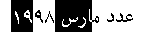 |
|---|---|
| 論理順 |
|
| 【テキスト】 | عدد مارس ١٩٩٨ |
したがって，双方向テキストの下では、メモリ内における連続的な論理的選択が， スクリーン上では不連続に見え得る ことになる。 この不連続性があるため、一部の利用者からは，マウスの動きの両端に挟まれる中の 視覚的に 位置するすべての文字を選択する， 視覚的選択モード も好まれる。 前の例と同じマウスの動きによる結果は、次の図の様になる： It is a consequence of the bidirectionality of the text that a single, continuous logical selection in memory results in a discontinuous selection appearing on the screen. This discontinuity makes some users prefer a visual selection mode, which selects all the characters visually located between the end-points of the user's mouse gesture. With the same mouse gesture as before, we now obtain:
| 視覚表示 | 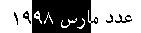 |
|---|---|
| 論理順 |
|
| 【テキスト】 | عدد مارس ١٩٩٨ |
上の例に見られるように，視覚的選択モードにおいては、 １個の視覚的選択範囲から 複数個 の論理範囲が得られ得るので、プロトコル, API, 実装による適応の必要が生じ得る。 双方向テキストのための利用者インタフェースに関連する，他の側面としては、キャレットの動き, backspace／delete キーのふるまいなどがある。 In visual selection mode, as seen in the example above, a single visual selection range may result in two or more logical ranges, which may have to be accommodated by protocols, APIs and implementations. Other, related aspects of a user interface for bidirectional text include caret movement, behavior of backspace/delete keys, and so on.
現時点では、大部分の実装が論理的選択を提供しており，視覚的選択を提供しているものはごく限られている。 Currently, most implementations provide logical selection, while only very few provide visual selection.
C075[実装]
選択された文字は、実装の一部が論理的選択／視覚的選択いずれを利用するかに関わらず，格納域においては論理順で保持されなければならない。 C075 [I]Independent of whether some implementation uses logical selection or visual selection, characters selected MUST be kept in logical order in storage.
C004[仕様]
範囲の選択を孕むプロトコルと API の仕様は、それらのプロトコルや API を通して，少なくとも スクリーン上の視覚的選択の実装をサポートするために必要な程度の，不連続な論理的選択を提供するべきである。 C004 [S] Specifications of protocols and APIs that involve selection of ranges SHOULD provide for discontiguous logical selections, at least to the extent necessary to support implementation of visual selection on screen on top of those protocols and APIs.
3.4. 入力の単位
キーボード入力においては，キーストロークと入力される文字に一対一の対応関係があるとは限らない。 キーボードのキーの個数は限られている。 一部のキーボードは、１回のキー押下から複数個の文字を生成する。 キーが文字を生成する代わりに，後続のキー押下の結果に影響する場合もある（ “デッドキー” ）。 多くの表記体系は，キーボードに納まり切らない多数の文字を備えるので、キーストロークの並びを文字の並びに変換する，より複雑な IME （ input-methods ）に頼らなければならない。 一部の文字の入力には特殊な修飾キーを要する言語もある。 自明でない入力の例については 付録 B：文字, キーストローク, グリフの例 を見よ。 In keyboard input, it is not always the case that keystrokes and input characters correspond one-to-one. A limited number of keys can fit on a keyboard. Some keyboards will generate multiple characters from a single keypress. In other cases ('dead keys') a key will generate no characters, but affect the results of subsequent keypresses. Many writing systems have far too many characters to fit on a keyboard and must rely on more complex input methods, which transform keystroke sequences into character sequences. Other languages may make it necessary to input some characters with special modifier keys. See B Examples of Characters, Keystrokes and Glyphs for examples of non-trivial input.
C005[仕様][実装]
仕様とソフトウェアは、１回のキーストロークから１個の文字が得られることや, （修飾キーを伴うものも含め）１個の文字が１回のキーストロークで入力されることや, 存在するどのキーボードも同じであることを，要求したり, それに依存してはならない。 C005 [S] [I] Specifications and software MUST NOT require nor depend on a single keystroke resulting in a single character, nor that a single character be input with a single keystroke (even with modifiers), nor that keyboards are the same all over the world.
3.5. 照合の単位
整列や検索の際に利用される文字列の比較は、一般的に，符号化された文字に一対一に対応しない単位に基づいている。 その種の文字列比較では、文字並びが，整列順序において固有の位置付けを持つような１個の 照合単位 にまとめられたり, １個の文字が複数個の照合単位に分離されたり, 文字の種々の側面（文字の大小, ダイアクリティカルマークの有無, 等々）が判別されて別々に整列される（多段階 整列）こともある。 String comparison as used in sorting and searching is based on units which do not in general have a one-to-one relationship to encoded characters. Such string comparison can aggregate a character sequence into a single collation unit with its own position in the sorting order, can separate a single character into multiple collation units, and can distinguish various aspects of a character (case, presence of diacritics, etc.) to be sorted separately (multi-level sorting).
加えて、一定量の前処理を要する場合もある。 また，一部の言語（日本語やアラビア語など）では、整列順序が，発音体系や語源†など，より高次の順序付け因子に支配され得る。 照合の手法はまた，アプリケーションごとに様々になり得る。 In addition, a certain amount of pre-processing may also be required, and in some languages (such as Japanese and Arabic) sort order may be governed by higher order factors such as phonetics or word roots. Collation methods may also vary by application.
例： 【 日本語では、漢字がその画数／偏／旁に基づいて整列されたり, 語句がその読み仮名の順で整列される場合もある。 】
例： スペイン語の伝統的な整列では、文字並び ch と ll が不可分な照合単位として扱われる。 スペイン語の整列や一定範囲の日常利用では ch が１個の単位と見なされる一方で、現在のデジタル符号化方式では２個の文字として扱われ，キーボードも同様になる（利用者は c, h を順にタイプする）。 EXAMPLE: In traditional Spanish sorting, the character sequences 'ch' and 'll' are treated as atomic collation units. Although Spanish sorting, and to some extent Spanish everyday use, treat 'ch' as a single unit, current digital encodings treat it as two characters, and keyboards do the same (the user types 'c', then 'h').
例： 一部の言語では、字 æ が，２個の連続する照合単位： a, e と見なされた上で整列される。 EXAMPLE: In some languages, the letter 'æ' is sorted as two consecutive collation units: 'a' and 'e'.
例： 大文字・小文字の区別がある用字系（ “bicameral” 用字系）で書かれたテキストの整列では、通常，最初の処理パスでは文字大小の同一視を要し，後続の処理パスの中で文字の大小が仕分けに利用される。 EXAMPLE: The sorting of text written in a bicameral script (i.e. a script which has distinct upper and lower case letters) is usually required to ignore case differences in a first pass; case is then used to break ties in a later pass.
例： 整列におけるアクセントマーク付きの字の扱いは、対象の用字系や言語に依存する。 字 ö は、フランス語においては o の修飾形として扱われる一方，スウェーデン語では o と完全に独立な字として扱われる（加えて，整列順も z の後になる）。 ドイツ語では、一部のアプリケーションが ö を oe の並びであるかのように扱う。 EXAMPLE: Treatment of accented letters in sorting is dependent on the script or language in question. The letter 'ö' is treated as a modified 'o' in French, but as a letter completely independent from 'o' (and sorting after 'z') in Swedish. In German certain applications treat the letter 'ö' as if it were the sequence 'oe'.
例： タイ語では、 ไก (U+0E44 U+0E01) の並びが กไ (U+0E01 U+0E44) と記されているかのように整列されなければならない。 再順序付けは，概して前処理の段階で行われる。 EXAMPLE: In Thai the sequence 'ไก' (U+0E44 U+0E01) must be sorted as if it were written 'กไ' (U+0E01 U+0E44). Reordering is typically done during an initial pre-processing stage.
例： ドイツ語の辞書では、一般に， ä ／ ö ／ ü がそれぞれ a ／ o ／ u と一緒にされて整列される。 一方で、ドイツ語の電話帳では、一般に， ä ／ ö ／ ü ／ がそれぞれ ae ／ oe ／ ue と綴られているかのように整列される。 このように、利用される照合アルゴリズムは，アプリケーションに依存する。 EXAMPLE: German dictionaries typically sort 'ä', 'ö' and 'ü' together with 'a', 'o' and 'u' respectively. On the other hand, German telephone books typically sort 'ä', 'ö' and 'ü' as if they were spelled 'ae', 'oe' and 'ue'. Here the application is affecting the collation algorithm used.
C006[仕様][実装]
利用者のためにテキストを整列あるいは検索するソフトウェアは、関連の言語やアプリケーションに適切な照合単位と順序付け規則に基づいて，それを行うべきである。 C006 [S] [I] Software that sorts or searches text for users SHOULD do so on the basis of appropriate collation units and ordering rules for the relevant language and/or application.
C007[仕様][実装]
検索や整列が動的に行われる所では、とりわけ多言語環境においては， “関連の言語” が現在の利用者のそれになるように（したがって利用者ごとに異なり得るように）決定されるべきである C007 [S] [I] Where searching or sorting is done dynamically, particularly in a multilingual environment, the 'relevant language' SHOULD be determined to be that of the current user, and may thus differ from user to user.
C066[仕様][実装]
利用者によるテキストの整列や検索が可能なソフトウェアは、照合単位と順序付けのための，別の規則の選択も可能にするべきである。 C066 [S] [I] Software that allows users to sort or search text SHOULD allow the user to select alternative rules for collation units and ordering.
C008[仕様][実装]
整列／検索アルゴリズムの仕様と実装は、テキストが Unicode のどの文字を含んでいても，適応するべきである。 C008 [S] [I] Specifications and implementations of sorting and searching algorithms SHOULD accommodate text that contains any character in Unicode.
したがって，テキストに規則の対象外の Unicode 文字が含まれている場合でも、最低でも，照合アルゴリズムが正常に機能し続けることが求められることに注意。 これは、すべての用字系に対応できるような複雑なアルゴリズムの完全な実装を要求するものではない。 この要件を満たす有用な方法として、すべての Unicode 文字が対象にされる，既定の照合アルゴリズムの適用が挙げられる。 Note that this requires, as a minimum, that a collation algorithm does not break down if the text contains Unicode characters that are not covered by its rules. It does not necessarily require full implementation of complex algorithms for all scripts. One useful way of satisfying the requirement is to apply a default collation algorithm that covers all Unicode characters.
ISO/IEC 14651 [ISO/IEC 14651] および Unicode 技術報告 #10, Unicode 照合アルゴリズム [UTR #10] は、大多数の言語に適応する照合のためのモデルを述べ，既定の照合順序を提供している。 それらは照合とその実装の指針を提供する，適切な基準になる。 いかなる文字が含まれようとも，予測可能な文字列の順序付けと比較を確保するために、既定の照合順序を，特定のロケールにあつらえの規則と組み合わせて利用できる。 ISO/IEC 14651 [ISO/IEC 14651] and Unicode Technical Report #10, the Unicode Collation Algorithm [UTR #10], describe a model for collation that accommodates most languages and provide a default collation order. They are appropriate references for collation and provide implementation guidelines. The default collation order can be used in conjunction with rules tailored for a particular locale to ensure a predictable ordering and comparison of strings, whatever characters they include.
3.6. 格納の単位
コンピュータにおけるデータの格納と通信は、ビットやバイト（オクテットとも呼ばれる 8-bit 単位）などの，情報の物理的な 格納／交換 の単位に依拠する。 仕様や実装にありがちな誤りは、物理的な格納単位に基づく文字の同等性比較である。 文字とその種の格納単位との間の対応関係は、実際には極めて複雑であり， 次の 4.1 節：文字符号化方式 にて論じられる。 Computer storage and communication rely on units of physical storage and information interchange, such as bits and bytes (8-bit units, also called octets). A frequent error in specifications and implementations is the equating of characters with units of physical storage. The mapping between characters and such units of storage is actually quite complex, and is discussed in the next section, 4.1 Character Encoding.
C009[仕様][実装]
仕様, ソフトウェア, 内容は、文字と物理的な格納単位との一対一の対応関係に依存したり，それを要求をしてはならない。 C009 [S] [I] Specifications, software and content MUST NOT require or depend on a one-to-one relationship between characters and units of physical storage.
3.7. 要約
語 文字は，種々の文脈の下で異なる仕方で利用されるので、それらの文脈の外で利用された際に，しばしば混同が生じる。 テキストのデジタル表現の文脈の下では、 文字 は，テキストの小さな論理単位として定義し得るものになる。 しかる後、 テキスト が文字の並びとして定義される。 その種の非公式的な定義は、多くの場合，共通の理解を醸成または獲得するに足るものではあるが、詳細が問題にされ始めるや否や，容易に誤解の源になる。 実際に機能する 仕様／プロトコル実装／末端利用者のためのソフトウェア を書くためには、これらの誤解が生じ得ることについて理解しておくことがとても重要である。 The term character is used differently in a variety of contexts and often leads to confusion when used outside of these contexts. In the context of the digital representations of text, a character can be defined as a small logical unit of text. Text is then defined as sequences of characters. While such an informal definition is sufficient to create or capture a common understanding in many cases, it is also sufficiently open to create misunderstandings as soon as details start to matter. In order to write effective specifications, protocol implementations, and software for end users, it is very important to understand that these misunderstandings can occur.
この 3 節：文字の知覚 では、語 “文字” とは必ずしも一致しない単位 — 音素, グリフ, 照合など — のための用語について論じた。 次の 4.1 節：文字符号化方式では、 符号化の単位 （符号位置, 符号単位, バイト）を精確に定義するために， “文字” に代わって利用されるべき用語について述べる。 This section, 3 Perceptions of Characters, has discussed terms for units that do not necessarily overlap with the term 'character', such as phoneme, glyph, and collation unit. The next section, 4.1 Character Encoding, lists terms that should be used rather than 'character' to precisely define units of encoding (code point, code unit, and byte).
C010[仕様]
語 “文字” を利用する仕様は、それが意図する意味を定義しなければならない。 C010 [S] When specifications use the term 'character' the specifications MUST define which meaning they intend.
C067[仕様]
仕様は、可能なら，一般的な語 “文字” の代わりに，より明確な用語を用いるべきである。 C067 [S] Specifications SHOULD use specific terms, when available, instead of the general term 'character'.
4. 文字のデジタル符号化方式
4.1. 文字符号化方式
WWW においては、文字は，コンピュータ利用環境と同様に，どう利用するにしても 符号化されなければならない。 テキストを符号化するために、多種多様な文字符号化方式が考案されている。 文字符号化方式とは、概ね，利用者が取り扱う文字の並びとコンピュータが取り扱うビットの並びとの間の対応関係として説明される。 On the WWW, as in any computing environment, characters must be encoded to be of any use. To achieve text encoding, a large variety of character encodings have been devised. Character encodings can loosely be explained as mappings between the character sequences that users manipulate and the sequences of bits that computers manipulate.
与えられたテキスト符号化方式の複雑さと，コンピュータの時代を通して考案されてきた 文字符号化方式のための多種多様な仕組みの下では、より公式的な符号化処理の記述が有用になる。 テキストの符号化処理を定義する過程は、次のように述べられる（より詳細な記述は “Unicode 技術報告 #17: 文字符号化モデル” [UTR #17] を参照）： Given the complexity of text encoding and the large variety of mechanisms for character encoding invented throughout the computer age, a more formal description of the encoding process is useful. The process of defining a text encoding can be described as follows (see Unicode Technical Report #17: Character Encoding Model [UTR #17] for a more detailed description):
-
まず、符号化の対象になる文字【抽象文字】の集合が選定される。 対象の文字は、１つ以上の対象言語の下で，テキストを表記し, 種々のテキスト処理が効率的に行えるように、実用的に選ばれる。 それらは、利用者が字その他の文字として知覚しているものとは，精確に対応していないかもしれない。 この文字の集合は レパートリ 呼ばれる。 A set of characters to be encoded is identified. The characters are pragmatically chosen to express text and to efficiently allow various text processes in one or more target languages. They may not correspond precisely to what users perceive as letters and other characters. The set of characters is called a repertoire.
【 レパートリは、通例は固定的（ “closed” ）にされるが，一般的には拡張も可能（ “open” ）にされ得る。 】
-
次に、レパートリ内の各文字は， 符号位置 と呼ばれる （数学的, 抽象的な）非負整数に結び付けられる。 その結果、 符号化文字集合 （ CCS ）と呼ばれる，レパートリから非負整数の集合への対応関係が得られる。 （符号位置（ code point ）は、 character-number あるいは code-position と呼ばれることもある。） Each character in the repertoire is then associated with a (mathematical, abstract) non-negative integer, the code point (also known as a character number or code position). The result, a mapping from the repertoire to the set of non-negative integers, is called a coded character set (CCS).
【 逐語訳的には，“code point” ／ “code position” の対訳はそれぞれ “符号点” ／ “符号位置” になる所であるが、Unicode の公式の対訳表に倣い， “code point” の対訳には “符号位置” を採用している。 】
- コンピュータ上での利用に適するような， 【固定的な】 基本データ型（バイトや 16-bit などの格納単位）が選定された上で、 文字符号化形式 （ CEF ）と呼ばれる，［ 符号化文字集合（ CCS ）の抽象的整数を，［ 符号単位 と呼ばれる，基本データ型による値 ］の並びへ符号化するための写像 ］が利用される。 文字符号化形式は、ごく単純なもの（例えば， CCS の整数をコンピュータ プラットフォームで選定されたデータ型による，整数の自然な表現に符号化するもの）から，いくらでも複雑なもの（例えば，１個の抽象的整数を符号化した結果が、可変個の符号単位からなり，そのそれぞれの値がその整数の自明でない関数で与えられるもの）にもなり得る。 To enable use in computers, a suitable base datatype is identified (such as a byte, a 16-bit unit of storage or other) and a character encoding form (CEF) is used, which encodes the abstract integers of a coded character set (CCS) into sequences of the code units of the base datatype. The character encoding form can be extremely simple (for instance, one which encodes the integers of the CCS into the natural representation of integers of the chosen datatype of the computing platform) or arbitrarily complex (a variable number of code units, where the value of each unit is a non-trivial function of the encoded integer).
-
最後に，バイト単位の伝達／格納のために、 文字符号化スキーム （ CES, 直列化スキーム とも呼ばれる）が利用される。 文字符号化スキームとは、文字符号化形式（ CEF ）の符号単位から well-defined なバイト列への対応関係であり、データ型が複数バイトに基づく場合に必要になるバイト順の指定や，一部の場合には，複数の文字符号化スキーム（例えば ISO 2022 ）の下での符号単位ごとのスキームの切替も織り込まれる。
【 “well-defined” — この語の解釈は注意を要する： 例えば対応関係が一対多で結果が一意的に定まらないものであっても，常に，元データを一意的に復元可能ならば、 well-defined と見なされ得るかもしれない。 逆に、個々の対応関係が一対一であっても，全体として元データを一意的に復元できないケースはあり得るので，その種のものは well-defined とは見なされないであろう（レパートリの拡張が許容されている場合は、拡張された際の well-defined の維持も考慮されるべきであろう）。 】
文字符号化スキームと, それに伴って利用される符号化文字集合の組は， 文字符号化方式 （ “character encoding” ）と呼ばれ、 IANA charset 識別子などの，一意的な識別子により識別される。 テキストを表現するバイト列と
charset識別子により識別される文字符号化方式が与えられれば、原理的には，テキストの文字並びを一義的に復元できるようになる。【 “文字符号化方式” — 訳語としては CES の同義語として用いられることが多いが，この訳ではこの対訳を用いる†。 上に述べられているように， CCS, CEF, CES をひっくるめた概念と捉えればよいであろう（文脈によっては “文字符号化処理” 等々）。 CCS と CEF が１つに固定された文脈下では（例えば現今のウェブプラットフォームの大部分は（その内部処理モデルが） Unicode と UTF-16 （ 16-bit 符号単位）に基づいている）， CES と同義になる。 （ † — 実際の所、一般には “（文字）エンコーディング” 以外の対訳は見当たらない。 他の “encoding …” については、“符号化…” の対訳があるにも関わらず。） 】
To enable transmission or storage using byte-oriented devices, a serialization scheme or character encoding scheme (CES) is next used. A character encoding scheme is a mapping of the code units of a character encoding form (CEF) into well-defined sequences of bytes, taking into account the necessary specification of byte-order for multi-byte base datatypes and including in some cases switching schemes between the code units of multiple character encoding schemes (an example is ISO 2022). A character encoding scheme, together with the coded character sets it is used with, is called a character encoding, and is identified by a unique identifier, such as an IANA charset identifier. Given a sequence of bytes representing text and a character encoding identified by a charset identifier, one can in principle unambiguously recover the sequence of characters of the text.
注記： 用語 “charset” および文字符号化方式についての更なる詳細についての論は、 4.4.2 節：文字符号化方式の識別 を見よ。 NOTE: See 4.4.2 Character encoding identification for a discussion of the term 'charset' and further details on character encodings.
注記： 語 “encoding” （符号化方式）は、文字を符号化する実際の処理を指すときや，その処理を遂行するための特定の方法を指すときにも利用されることがあり，いくぶんの曖昧さを孕む（例えば “このファイルは X encoding である” 【 “このファイルは， X という名称から識別される符号化方式に規定されている符号化の方法により符号化処理が施された結果を内容とする” 】）。 これらの用法の区別は、その違いが念頭にありさえすれば，通常は文脈から推定し得るものになる。 NOTE: The term 'character encoding' is somewhat ambiguous, as it is sometimes used to describe the actual process of encoding characters and sometimes to denote a particular way to perform that process (as in "this file is in the X character encoding"). Context normally allows the distinction of those uses, once one is aware of the ambiguity.
注記： 与えられた 文字の並び, および “文字符号化方式” から，常に同じ並びのバイトが生成されるとは限らない。 特に， ISO 2022 に基づく符号化方式では、符号化処理の過程でいくつかの選択肢をとり得る。 NOTE: Given a sequence of characters, a given 'character encoding' may not always produce the same sequence of bytes. In particular for encodings based on ISO 2022, there may be choices available during the encoding process.
最も単純な場合では、例えば US-ASCII [ISO/IEC 646] や ISO-8859-1 のように，符号化処理 全体が文字からバイトへの自明な一対一の対応関係として、一段で済ませられる。 In very simple cases, the whole encoding process can be collapsed to a single step, a trivial one-to-one mapping from characters to bytes; this is the case, for instance, for US-ASCII [ISO/IEC 646] and ISO-8859-1.
UTF-8 ／ UTF-16 ／ UTF-32 に符号化されたテキストは Unicode 符号化形式 と呼ばれる。 Text is said to be in a Unicode encoding form if it is encoded in UTF-8, UTF-16 or UTF-32.
4.2. 符号変換
テキストをある
文字符号化方式
【で符号化された状態】
から別のそれへ変換する処理は
符号変換
と呼ばれる。
符号変換器は、テキストを構文解析せずに、文字符号化方式のレベルでのみ働く。
従って、数値文字参照（
4.6 節：文字エスケープ法
を見よ）などの
文字エスケープ
を扱うこともなく，埋め込まれている文字符号化方式の情報（例えば XML 宣言や HTML の meta 要素の中の）にも対応しない。
Transcoding is the process of converting text from one character encoding to another. Transcoders work only at the level of character encoding and do not parse the text; consequently, they do not deal with character escapes such as numeric character references (see 4.6 Character Escaping) and do not adjust embedded character encoding information (for instance in an XML declaration or in an HTML meta element).
注記： 符号変換は 一対一, 多対一, 一対多, 多対多 いずれの対応関係も孕み得る。 加えて，文字の格納順序も符号化方式の間で変わり得る。 Unicode 符号化形式のような一部のものは，論理順と規定する一方、視覚順を利用するものもある。 符号化方式には、ダイアクリティカルマークを基底文字の前に置くよう規定されているものもあれば，後に置くようにするものもある。 これらの文字の並べ方の相違があるため、符号変換は，順序の入れ替わりも孕む： NOTE: Transcoding may involve one-to-one, many-to-one, one-to-many or many-to-many mappings. In addition, the storage order of characters varies between encodings: some, such as the Unicode encoding forms, prescribe logical ordering, while others use visual ordering; among encodings that have separate diacritics, some prescribe that they be placed before the base character, some after. Because of these differences in sequencing characters, transcoding may involve reordering: thus XYZ may map to yxz.
例： 最初の例は “ロシア語” を意味するロシア語の単語 “Русский” を Unicode の UTF-16 符号化方式から ISO 8859-5 符号化方式へ符号変換した場合を示している： EXAMPLE: This first example shows the transcoding of the Russian word 'Русский' meaning 'Russian' (language), from the UTF-16 encoding of Unicode to the ISO 8859-5 encoding:
| UTF-16 | ISO 8859-5 | ||
|---|---|---|---|
| 符号単位 | （短縮）文字名 | 符号単位 | （短縮）文字名 |
| 0420 | CAPITAL ER | C0 | CAPITAL ER |
| 0443 | SMALL U | E3 | SMALL U |
| 0441 | SMALL ES | E1 | SMALL ES |
| 0441 | SMALL ES | E1 | SMALL ES |
| 043A | SMALL KA | DA | SMALL KA |
| 0438 | SMALL I | D8 | SMALL I |
| 0439 | SMALL SHORT I | D9 | SMALL SHORT I |
例： 次の例はずっと複雑で、 “平和” を意味するアラビア語の単語 “السلام” が、 IBM CP864 符号化方式により視覚的に順序付けられ, 文脈付けられた状態から， Unicode の UTF-16 符号化方式への符号変換を示す： EXAMPLE: This second example shows a much more complex case, where the Arabic word 'السلام', meaning 'peace', is transcoded from the visually-ordered, contextualized encoding IBM CP864 to the UTF-16 encoding of Unicode:
| IBM CP864 | UTF-16 | ||
|---|---|---|---|
| 符号単位 | （短縮）文字名 | 符号単位 | （短縮）文字名 |
| EF | FINAL MEEM | 0627 | ALEF |
| 9E | MEDIAN LAM-ALEF | 0644 | LAM |
| D3 | MEDIAN SEEN | 0633 | SEEN |
| E4 | MEDIAN LAM | 0644 | LAM |
| C7 | INITIAL ALEF | 0627 | ALEF |
| 0645 | MEEM | ||
文字の順序が反対にされていることに注意。 CP864 の１個の LAM-ALEF が UTF-16 においては LAM, ALEF の並びに変換され, また 元の符号化方式の，文脈に応じた変形（頭字／中字／尾字（ initial ／ median ／ final ））は、目的の符号化方式においては，総称的な文字に変換されている。 Notice that the order of the characters has been reversed, that the single LAM-ALEF in CP864 has been converted to a LAM ALEF sequence in UTF-16, and that the contextual variants (initial, median or final) in the source encoding have been converted to generic characters in the target encoding.
4.3. 基準処理モデル
Internet 上の大部分のプロトコルやデータ形式，特に，最も重要なウェブデータ形式［ HTML, CSS, XML ］は、テキストに基づいている。 それらのデータ形式は、テキストのみからなるが、 プレーンテキスト （“素のテキスト” — マークアップやプログラミング言語の文脈下にないテキスト）自体が供するものに新たな機能性を加えるために、関連の仕様により，テキストに構造が持ち込まれ, 一定の構成子に意味が与えられる。 HTML と XML は マークアップ言語 である。 すなわち、文書は全体がテキストのみからなるものと規定されつつ，このテキストを マークアップ と 文字データ に分離するための規約も伴なわれる。 XML 1.0 仕様 [XML 1.0] 2.4 節 からの引用： Many Internet protocols and data formats, most notably the very important Web formats HTML, CSS and XML, are based on text. In those formats, everything is text but the relevant specifications impose a structure on the text, giving meaning to certain constructs so as to obtain functionality in addition to that provided by plain text (text that is not in the context of markup or a programming language). HTML and XML are markup languages, defining documents entirely composed of text but with conventions allowing the separation of this text into markup and character data. Citing from the XML 1.0 specification [XML 1.0], section 2.4:
テキスト内容は文字データとマークアップの混成である…（中略）マークアップでないすべてのテキストは、文書の文字データをなす。
"Text consists of intermingled character data and markup. [...] All text that is not markup constitutes the character data of the document."
この節では、もっぱら テキスト （すなわち，文字の並び）の取り扱いについて焦点をあてる。 For the purposes of this section, the important aspect is that everything is text, that is, a sequence of characters.
テキストデータオブジェクト とは、全体がテキストからなるプロトコルメッセージや文書であるか, あるいは その中の，格納／取得など 外部とのやりとりの目的で別々に扱われるテキストを意味する。 例えば， XML の外部解析対象実体や テキストの MIME entity body [MIME-entity] などが例として挙げられる。 A textual data object is a whole text protocol message or a whole text document, or a part of it that is treated separately for purposes of external storage and retrieval. Examples include external parsed entities in XML and textual MIME entity bodies [MIME-entity].
C013[仕様][内容]
プロトコル／データ形式 の仕様に定義されるテキストデータオブジェクトは、単独の文字符号化方式に統一されなければならない。 C013 [S] [C] Textual data objects defined by protocol or format specifications MUST be in a single character encoding.
これは， ISO 2022 のような文字集合 切替スキームが利用できないことを意味するわけではないことに注意。 その種のスキームでは、１つの文字符号化方式の下で文字集合の切替が遂行される。 Note that this does not imply that character set switching schemes such as ISO 2022 cannot be used, since such schemes perform character set switching within a single character encoding.
草創期の頃から、ウェブでは 基準処理モデル の開発が行われてきた。 初めて述べられたのは， HTML を対象にした RFC 2070 [RFC 2070] である。 このモデルは後に， XML と CSS に取り込まれた。 上に述べられたように，それはテキストに基づくどんなデータ形式／プロトコルにも適用し得る。 基準処理モデルの本質は、 Unicode を共通の基準に利用する所にある。 仕様による基準処理モデルの利用は、しかしながら，実装が実際に Unicode を利用することを要求するわけではない。 実装には，その処理がモデルの記述に沿って行われるかのようにふるまうことのみが、要件として課される。 また、この文書は語 基準処理モデルを利用し，その処理の内容を通して その特性を述べるが、明示的に処理モデルを規定しない仕様にも，このモデルは適用される。 Since its early days, the Web has seen the development of a Reference Processing Model, first described for HTML in RFC 2070 [RFC 2070]. This model was later embraced by XML and CSS. It is applicable to any data format or protocol that is text-based as described above. The essence of the Reference Processing Model is the use of Unicode as a common reference. Use of the Reference Processing Model by a specification does not, however, require that implementations actually use Unicode. The requirement is only that the implementations behave as if the processing took place as described by the Model. Also, while this document uses the term Reference Processing Model and describes its properties in terms of processing, the model also applies to specifications that do not explicitly define a processing model.
C014[仕様]
テキスト処理を孕むすべての仕様は、その処理を次に示す 基準処理モデル に従って指定しなければならない： C014 [S]All specifications that involve processing of text MUST specify the processing of text according to the Reference Processing Model, namely:
- 仕様は、バイトや グリフ ではなく， Unicode 文字を通して、テキストを定義しなければならない。 Specifications MUST define text in terms of Unicode characters, not bytes or glyphs.
- それらのテキストデータオブジェクトに対する仕様は、 Unicode 符号化形式に符号変換し得るものであれば，どのような文字符号化方式の利用も許容してもよい。 For their textual data objects specifications MAY allow use of any character encoding which can be transcoded to a Unicode encoding form.
-
仕様は、一部の文字符号化方式を否認または廃止して，他のものを義務付けてもよい。 実際の文字符号化方式に関係なく、そのふるまいは，次で与えられる処理が行われたかのように指定されなければならない： Specifications MAY choose to disallow or deprecate some character encodings and to make others mandatory. Independent of the actual character encoding, the specified behavior MUST be the same as if the processing happened as follows:
- その仕様を実装するアプリケーションにより受信されたテキストデータオブジェクトの文字符号化方式は， Unicode 文字の並びとして決定されなければならず、データオブジェクトは， Unicode 文字の並びとして解釈されなければならない — これは、そのデータオブジェクトから，何らかの Unicode 符号化形式 への［ 必要なら文字符号化方式ラベルの補正も伴われた，その Unicode 符号化形式で受信するような ］ 符号変換 と等価でなければならない。 The character encoding of any textual data object received by the application implementing the specification MUST be determined and the data object MUST be interpreted as a sequence of Unicode characters - this MUST be equivalent to transcoding the data object to some Unicode encoding form, adjusting any character encoding label if necessary, and receiving it in that Unicode encoding form.
- すべての処理は、この Unicode 文字の並びの上で行われなければならない。 All processing MUST take place on this sequence of Unicode characters.
- テキストがアプリケーションから出力される場合、 Unicode 文字の並びは，仕様で許容されているものから選定された文字符号化方式を用いて，符号化されなければならない。 If text is output by the application, the sequence of Unicode characters MUST be encoded using a character encoding chosen among those allowed by the specification.
- 仕様が，複数のテキストデータオブジェクトを孕んでいる場合（例えば外部解析対象実体を参照している XML 文書など）、これらのデータオブジェクトそれぞれに異なる文字符号化方式が選ばれてもよい。 いずれにせよ、すべてのテキストデータオブジェクトに， 基準処理モデル が適用されなければならない。 If a specification is such that multiple textual data objects are involved (such as an XML document referring to external parsed entities), it MAY choose to allow these data objects to be in different character encodings. In all cases, the Reference Processing Model MUST be applied to all textual data objects.
注記： XML 1.0 仕様 [XML 1.0] のアプリケーションを定義するすべての仕様は、自動的に，この基準処理モデルを継承する。 XML では、仕様全体が Unicode 文字を通して定義されており，解析対象実体には他の文字符号化方式も許容されつつ，【 処理モデルにおいては 】 UTF-8 ／ UTF-16 文字符号化方式の利用が要求されている。 NOTE: All specifications which define applications of the XML 1.0 specification [XML 1.0] automatically inherit this Reference Processing Model. XML is entirely defined in terms of Unicode characters and requires the UTF-8 and UTF-16 character encodings while allowing any other character encoding for parsed entities.
注記： 仕様において Unicode 符号化形式でない文字符号化方式が許容される場合、実装者は，その種の符号化方式の文字と Unicode 文字との対応関係が、実施において 符号変換 に利用されるソフトウェアに依存することに，留意するべきである。 その種の不一致については、例えば 日本語 XML Profile [XML Japanese Profile] を参照されたし。 NOTE: When specifications choose to allow character encodings other than Unicode encoding forms, implementers should be aware that the correspondence between the characters of such encodings and Unicode characters may in practice depend on the software used for transcoding. See the Japanese XML Profile [XML Japanese Profile] for examples of such inconsistencies.
C070[仕様]
仕様は、全範囲（すなわち， U+0000 〜 U+10FFFF ）の いかなる Unicode 符号位置 も，除外するべきでない C070 [S] Specifications SHOULD NOT arbitrarily exclude code points from the full range of Unicode code points from U+0000 to U+10FFFF inclusive.
C077[仕様]
仕様は、 U+10FFFF を越える符号位置を許容してはならない。 C077 [S] Specifications MUST NOT allow code points above U+10FFFF.
Unicode の中には、内部利用（非文字など）や特殊な機能のための符号位置（代用符号位置など）が一部含まれている。 Unicode contains some code points for internal use (such as noncharacters) or special functions (such as surrogate code points).
C079[仕様]
仕様は、 Unicode により内部利用のために予約されている符号位置の利用を許容するべきでない。 C079 [S]Specifications SHOULD NOT allow the use of codepoints reserved by Unicode for internal use.
C078[仕様]
仕様は、代用符号位置の利用を許容してはならない。 C078 [S] Specifications MUST NOT allow the use of surrogate code points.
相当の理由も無く，一部の符号位置を除外することは、 W3C の世界共通のアクセス容易性の目標と競合する。 符号位置の除外は、利用者その他のコミュニティにとって重要になり得る 一部の用字系を利用できなくする。 例えば、大きな理由も無く，基本多言語面より先の符号位置を除外するように定めたり, 符号位置を US-ASCII ／ Latin-1 レパートリに制限することは適切でない。 また、 Unicode 標準では，ソフトウェアが どの符号位置に対しても壊れないことが要求されていることにも注意。 Excluding code points without good reason conflicts with the W3C goal of universal accessibility. Excluding code points would prevent some scripts from being used which may be important to a user community or communities. For example, without strong reasons to do so, decisions to exclude code points above the Basic Multilingual Plane or to limit code points to the US-ASCII or Latin-1 repertoire are inappropriate. Also, please note that the Unicode Standard requires software to not corrupt any code points.
文字を除外する 合法的かつ恣意的でない理由としては、 Unicode in XML and other Markup Languages [UXML] が挙げられる。 そこでは、一部の文字の利用が次のような理由で抑止されている： Other examples of legitimate and non-arbitrary reasons to exclude characters can be seen in Unicode in XML and other Markup Languages [UXML], where the use of certain characters is discouraged for reasons such as:
- それらは Unicode 標準により廃止予定にされた。 They are deprecated in the Unicode Standard.
- それらは 追加のデータなしにサポートされ得ない。 They cannot be supported without additional data.
- それらは マークアップの方がより上手く取り扱える。 They are better handled by markup.
- それらは 等価なマークアップと競合する。 They conflict with equivalent markup.
4.4. 文字符号化方式の選定と識別
符号化されたテキストは，符号化方式を知ることなしに 解釈／処理 を行えないので、文字符号化方式（ 4.1 節：文字符号化方式 を見よ）は、テキストが 交換／格納／処理されるような既知のあらゆる所で，決定的に重要になる。 以下では、利用する “文字符号化方式” は，文脈に依存して 文字符号化形式 (CEF) または 文字符号化スキーム (CES) のいずれかを意味する。 テキストがバイトストリームとして伝送／格納されるときは（例えばプロトコルやファイルシステムの中で）、正しく解釈されることを確保するため， CES の指定が要求される。 API などの文脈では、複数バイトのバイト順は，環境（概して，プロセッサアーキテクチャ）から指定されるので、 CEF の指定で足る。 Because encoded text cannot be interpreted and processed without knowing the encoding, it is vitally important that the character encoding (see 4.1 Character Encoding) is known at all times and places where text is exchanged, stored or processed. In what follows we use 'character encoding' to mean either character encoding form (CEF) or character encoding scheme (CES) depending on the context. When text is transmitted or stored as a byte stream, for instance in a protocol or file system, specification of a CES is required to ensure proper interpretation. In contexts such as an API, where the environment (typically the processor architecture) specifies the byte order of multibyte quantities, specification of a CEF suffices.
C015[仕様]
仕様は、一意的な文字符号化方式を指定するか, または テキストの符号化方式が確実に識別されるような，文字符号化方式を識別するための仕組みを提供しなければならない。 C015 [S] Specifications MUST either specify a unique character encoding, or provide character encoding identification mechanisms such that the encoding of text can be reliably identified.
C016[仕様]
新たな プロトコル／データ形式／ API ／仕様 が設計される際には、一意的な文字符号化方式が要求されるべきである。 C016 [S] When designing a new protocol, format or API, specifications SHOULD require a unique character encoding.
C017[仕様]
［ プロトコル／データ形式, あるいは プロトコル／データ形式 上の API ］に基づく仕様や, 文字符号化方式のための規則をすでに備えている API の仕様は、それらの規則を変更せずに，そのまま利用するべきである。 C017 [S] When basing a protocol, format, or API on a protocol, format, or API that already has rules for character encoding, specifications SHOULD use rather than change these rules.
例： XML に基づくデータ形式が外部実体の文字符号化方式を選定／決定する際には、新たなものを考案せずに，既存の XML 規則を利用するべきである。 EXAMPLE: An XML-based format should use the existing XML rules for choosing and determining the character encoding of external entities, rather than invent new ones.
4.4.1. 一意的な文字符号化方式の義務付け
一意的な文字符号化方式の義務付けは単純かつ効率的で堅牢になる。 符号化方式タグを 指定／生成／伝送／解釈 する必要もなくなり、受信側からは，文字符号化方式が常に解されることになる。 データが非電子媒体を通して転送された後で，元のデジタル表現に復元する必要が生じた場合でも、利用された文字符号化方式についての曖昧さは生じない。 既存のデータ, システム, プロトコル, アプリケーションとの互換性のために 複数の文字符号化方式が必要になる場合でも、それらは，しばしば プロトコル, データ形式, API の境界, あるいはそれらの外側で取り扱い得る。 DOM [DOM Level 1] は、これが行われている例になる。 一意的な文字符号化方式の選定により、少量のテキストを扱うときや, 仕様が実際の処理に密接なときには，より大きな優位性が得られる。 Mandating a unique character encoding is simple, efficient, and robust. There is no need for specifying, producing, transmitting, and interpreting encoding tags. At the receiver, the character encoding will always be understood. There is also no ambiguity as to which character encoding to use if data is transferred non-electronically and later has to be converted back to a digital representation. Even when there is a need for compatibility with existing data, systems, protocols and applications, multiple character encodings can often be dealt with at the boundaries or outside a protocol, format, or API. The DOM [DOM Level 1] is an example of where this was done. The advantages of choosing a unique character encoding are greater when text sizes are small or the specification is close to the actual processing.
C018[仕様]
一意的な文字符号化方式が要求される場合、その文字符号化方式は UTF-8, UTF-16, UTF-32 のいずれかでなければならない。 C018 [S] When a unique character encoding is required, the character encoding MUST be UTF-8, UTF-16 or UTF-32.
UTF-8 は US-ASCII の上位互換なので（ US-ASCII 文字列は UTF-8 文字列でもある — [RFC 3629] を見よ）、 US-ASCII との互換性が望まれる場合には UTF-8 が適切になる。 他の状況，例えば API などでは、 UTF-16 や UTF-32 がより適切なものになり得る。 これらを選定する際に考慮される理由には、内部処理の効率性や, 他の処理との相互運用性などが挙げられる。 US-ASCII is upwards-compatible with UTF-8 (an US-ASCII string is also a UTF-8 string, see [RFC 3629]), and UTF-8 is therefore appropriate if compatibility with US-ASCII is desired. In other situations, such as for APIs, UTF-16 or UTF-32 may be more appropriate. Possible reasons for choosing one of these include efficiency of internal processing and interoperability with other processes.
注記：
IETF Charset Policy
[RFC 2277]
には、
プロトコルは UTF-8 charset を利用できなければならない
と指定されている。
NOTE: The IETF Charset Policy [RFC 2277] specifies that on the Internet "Protocols MUST be able to use the UTF-8 charset".
注記： XML 1.0 仕様 [XML 1.0] では、すべての適合 XML プロセッサに対し， UTF-16 と UTF-8 のいずれも受け入れることを要求している。 NOTE: The XML 1.0 specification [XML 1.0] requires all conforming XML processors to accept both UTF-16 and UTF-8.
4.4.2. 文字符号化方式の識別
MIME Internet 仕様は、文字符号化方式を識別するための仕組み
[MIME-charset]
[RFC 2978]
の好例である。
MIME charset パラメタは、受信されたデータのバイト列を 文字の並びに一意的に復号するに足る情報を供するものとして、定義されている。
その値は IANA charset レジストリ
[IANA]
から抜き出されたものになる。
The MIME Internet specification provides a good example of a mechanism for character encoding identification [MIME-charset][RFC 2978]. The MIME charset parameter definition is intended to supply sufficient information to uniquely decode the sequence of bytes of the received data into a sequence of characters. The values are drawn from the IANA charset registry [IANA].
注記： 具合が悪いことに、一部の charset 識別子は，単一の, 一意的な文字符号化方式を表現していない。 これらの識別子は小さな多様性を孕んでいる。 小さくても，その違いは重大になり得るし, 時の経過と伴に変わり得る。 これらの識別子の下では、バイト並びから文字並びへ復元する際に確定できない部分が生じる。 例えば Shift_JIS では， 0x5C に符号化された文字が確定できない。 この符号位置は YEN SIGN を表現することもあれば， REVERSE SOLIDUS を表現することもある。 この例についての詳細および，他のその種の曖昧性を孕む charset 識別子については [XML Japanese Profile] を参照。 NOTE: Unfortunately, some charset identifiers do not represent a single, unique character encoding. Instead, these identifiers denote a number of small variations. Even though small, the differences may be crucial and may vary over time. For these identifiers, recovery of the character sequence from a byte sequence is ambiguous. For example, the character encoded as 0x5C in Shift_JIS is ambiguous. This code point sometimes represents a YEN SIGN and sometimes represents a REVERSE SOLIDUS. See the [XML Japanese Profile] for more detail on this example and for additional examples of such ambiguous charset identifiers.
注記： 語 charset は、 “文字集合” （ character set ）に由来するもので，長く込み入った歴史を伴う表記である（更なる論は [Connolly] を参照）。 NOTE: The term charset derives from 'character set', an expression with a long and tortured history (see [Connolly] for a discussion).
C020[仕様]
仕様は、文字符号化方式の参照に語
“文字集合”
や
“charset”
を用いるべきでない。
ただし、後者については，
MIME charset
パラメタあるいは その IANA に登録済みの値を参照する際に利用される場合は除く。
用語
“文字符号化方式”
，または 特定の場合には用語
“文字符号化形式”
または
“文字符号化スキーム”
の利用が推奨される。
C020 [S] Specifications SHOULD avoid using the terms 'character set' and 'charset' to refer to a character encoding, except when the latter is used to refer to the MIME charset parameter or its IANA-registered values. The term 'character encoding', or in specific cases the terms 'character encoding form' or 'character encoding scheme', are RECOMMENDED.
注記：
XML においては、
XML 宣言／テキスト宣言に含められた
encoding
疑似属性から， IANA charset を利用する文字符号化方式が識別される。
NOTE: In XML, the XML declaration or the text declaration contains the encoding pseudo-attribute which identifies the character encoding using the IANA charset.
IANA charset レジストリは、 Internet 上の文字符号化スキーム名とそれらの別名が含められている，公式のリストである。 The IANA charset registry is the official list of names and aliases for character encoding schemes on the Internet.
C021[仕様]
仕様は、一意的な符号化方式を採用しない場合には， IANA charset レジストリに含まれる名前の利用を — 特に， プロトコル／データ形式／ API の文字符号化方式として指定する際には，そのレジストリの中の “推奨 MIME 名” （ MIME preferred names ）として識別される名前の利用を — 要求するべきである。 C021 [S] If the unique encoding approach is not taken, specifications SHOULD require the use of the IANA charset registry names, and in particular the names identified in the registry as 'MIME preferred names', to designate character encodings in protocols, data formats and APIs.
C022[仕様][実装][内容]
IANA レジストリに含まれていない文字符号化方式は、私的な合意が無い限り，利用されるべきでない。 C022 [S] [I] [C] Character encodings that are not in the IANA registry SHOULD NOT be used, except by private agreement.
C023[仕様][実装][内容]
未登録の文字符号化方式が利用される場合、名前の先頭に “x-” を付与する慣行に従わなければならない。 C023 [S] [I] [C] If an unregistered character encoding is used, the convention of using 'x-' at the beginning of the name MUST be followed.
C049[実装][内容]
内容に対する文字の符号化は、利用する側からは解されそうにないような，解り難い符号化方式は避けつつ，なるべく直接的に文字を表現し得る方法（すなわち， 文字エスケープ などの マークアップ で文字を表現する必要を最小限に抑える方法）を採るべきである。 C049 [I] [C] The character encoding of content SHOULD be chosen so that it maximizes the opportunity to directly represent characters (ie. minimizes the need to represent characters by markup means such as character escapes) while avoiding obscure encodings that are unlikely to be understood by recipients.
注記： 巨大なレパートリを備え, 広範からのサポートもある Unicode に基づく文字符号化方式は、文書の符号化として好ましい選定である。 NOTE: Due to Unicode's large repertoire and wide base of support, a character encoding based on Unicode is a good choice to encode a document.
C034[内容]
文字符号化方式を識別するための機構が既に用意されている場合、内容は，それらを利用しなければならない。 “既に用意されている” には、既定として定められるもの（例えば XML 1.0 [XML 1.0] のもの）も含まれる。 その種の既定への依拠は、この，識別のための要件を満たすに足る。 C034 [C] If facilities are offered for identifying character encoding, content MUST make use of them; where the facilities offered for character encoding identification include defaults (e.g. in XML 1.0 [XML 1.0]), relying on such defaults is sufficient to satisfy this identification requirement.
C024[実装][内容]
テキストデータにラベル付けする 内容, およびソフトウェアは、適切な仕様（例えば XML テキストを編集する場合は XML 仕様）にて要求されている，いずれかの名前を利用しなければならない。 また、 MIME preferred name に属する名前に対応する文字符号化方式のデータにラベル付けする際には，その名前を利用するべきである。 C024 [I] [C] Content and software that label text data MUST use one of the names required by the appropriate specification (e.g. the XML specification when editing XML text) and SHOULD use the MIME preferred name of a character encoding to label data in that character encoding.
【 ラベル — データに利用されている文字符号化方式を識別するために付与される名前 】
C025[実装][内容]
IANA に登録されたどの名前にも対応しないような文字符号化方式によるテキストデータに対し、そのラベル付けに IANA に登録済みの
charset
名が利用されてはならない。
C025 [I] [C] An IANA-registered charset name MUST NOT be used to label text data in a character encoding other than the one identified in the IANA registration of that name.
C026[仕様]
一意的な符号化方式を採用しない仕様は、少なくとも Unicode の UTF-8, UTF-16 符号化形式いずれかを，適格な文字符号化方式として指定しなければならない。 また、 UTF-8 または UTF-16 のいずれかを，要求される符号化形式（仕様の実装からサポートされなければならない符号化形式）として採用するべきである。 C026 [S] If the unique encoding approach is not chosen, specifications MUST designate at least one of the UTF-8 and UTF-16 encoding forms of Unicode as admissible character encodings and SHOULD choose at least one of UTF-8 or UTF-16 as required encoding forms (encoding forms that MUST be supported by implementations of the specification).
C027[仕様]
既定の符号化方式を要する仕様は、 UTF-8 と UTF-16 のいずれか一方を, あるいは それらの判別に適する手段を定める場合は両者を，既定のものとして定義しなければならない。 C027 [S] Specifications that require a default encoding MUST define either UTF-8 or UTF-16 as the default, or both if they define suitable means of distinguishing them.
C028[仕様]
仕様は、データの符号化方式を決定する方法に経験則の利用を提案してはならない。 C028 [S] Specifications MUST NOT propose the use of heuristics to determine the encoding of data.
経験則の例としては、バイト（パタン）や文字（パタン）の頻度に対する統計的解析の利用が挙げられる。 経験則は実装間でふるまいが一貫しないので好ましくない。 XML 1.0 [XML 1.0], Appendix F にて与えられるような、明確な指示書きにより，文字符号化方式を一義的に決定する方法は、経験則とは見なされない。 Examples of heuristics include the use of statistical analysis of byte (pattern) frequencies or character (pattern) frequencies. Heuristics are bad because they will not work consistently across different implementations. Well-defined instructions of how to unambiguously determine a character encoding, such as those given in XML 1.0 [XML 1.0], Appendix F, are not considered heuristics.
C029[実装]
受信側のソフトウェアは、データの符号化方式を，利用可能な情報から適切な仕様に従って決定しなければならない。 C029 [I] Receiving software MUST determine the encoding of data from available information according to appropriate specifications.
C030[実装]
IANA に登録済みの
charset
名が認識されたときは、受信側のソフトウェアは、受信されたデータを IANA レジストリの中の その名前に結び付けられている符号化方式に従って，解釈しなければならない。
C030 [I] When an IANA-registered charset name is recognized, receiving software MUST interpret the received data according to the encoding associated with the name in the IANA registry.
C031[実装]
charset が供されていないときは、受信側のソフトウェアは、仕様に指定されている既定の文字符号化方式を尊守しなければならない。 C031 [I] When no charset is provided receiving software MUST adhere to the default character encoding(s) specified in the specification.
受信側のソフトウェアは、必要に応じて，任意数の 文字符号化方式および charset 名とその別名 を認識してよい。 Receiving software may recognize as many character encodings and as many charset names and aliases for them as appropriate.
field-upgradeable 【具体的には何？】 の仕組みは、この目的に適切なものになる。 一部の文字符号化方式は、ある程度 一定の言語との結び付きが強い（例えば Shift_JIS と日本語）。 与えられた言語や一定層の顧客のサポートは、一定の文字符号化方式のサポートの必要を意味し得る。 しかしながら、支持は得ているが要求されてはいない符号化方式に対する世界共通サポートが必要と見なされているわけではない。 サポートを要する文字符号化方式は，時の経過に伴い変わり得る。 この文書は、与えられた言語のサポートに，どの文字符号化方式が適切／必要であるかについてのアドバイスは供さない。 A field-upgradeable mechanism may be appropriate for this purpose. Certain character encodings are more or less associated with certain languages (e.g. Shift_JIS with Japanese). Trying to support a given language or set of customers may mean that certain character encodings have to be supported. However, one cannot assume universal support for a favoured but non-required encoding. The character encodings that need to be supported may change over time. This document does not give any advice on which character encoding may be appropriate or necessary for the support of any given language.
ウェブアーキテクチャは層の積み重ねであるので（例えばプロトコルを通して利用されるデータ形式）、文字符号化方式についての情報が複数あったり競合することが起こり得る。 Because of the layered Web architecture (e.g. formats used over protocols), there may be multiple and at times conflicting information about character encoding.
C035[仕様]
仕様は、文字符号化方式についての情報が複数ある, あるいは競合する場合に，それを解決する仕組み（例えば優先順位）を規定しなければならない。 C035 [S] Specifications MUST define conflict-resolution mechanisms (e.g. priorities) for cases where there is multiple or conflicting information about character encoding.
C033[実装]
ソフトウェアは、文字符号化方式の識別と競合の解決のための仕組みを，完全に実装しなければならない。 C033 [I] Software MUST completely implement the mechanisms for character encoding identification and conflict resolution.
4.5. 私用のための符号位置
Unicode の中の一定範囲の 符号位置 — 私用領域 （ PUA — U+E000-F8FF ）と第 15, 16 面（ U+F0000-FFFFD と U+100000-10FFFD ） — は、私用用途としての指定を受けている。 これらの符号位置は，標準文字には決して割り当てられないことが保証されており、私的合意の下に利用できる。 しかしながら、私的合意は，異なるそれらの間で符号位置が衝突し得るので，ウェブ上まで拡大されることはない。 また、私的合意であるがため，その符号位置の意味は急速に失われ易い. Certain ranges of Unicode code points are designated for private use: the Private Use Area (PUA) (U+E000-F8FF) and planes 15 and 16 (U+F0000-FFFFD and U+100000-10FFFD). These code points are guaranteed to never be allocated to standard characters, and are available for use by private agreement. However, private agreements do not scale on the Web. Code points from different private agreements may collide. Also, a private agreement, and therefore the meaning of the code points, can quickly become lost.
C073[内容]
公に交換される内容は、私用領域の符号位置を利用するべきでない。 C073 [C] Publicly interchanged content SHOULD NOT use codepoints in the private use area.
注記： 例外的な PUA の利用として代表的なものには、符号化されたことのない用字系（例えば 歴史的あるいは稀なもの）に対する符号化方式の設計, あるいは試験が挙げられる。 NOTE: A typical exception would be the use of the PUA to design and test the encoding of not yet encoded (e.g. historic or rare) scripts.
C076[内容]
内容は、符号位置を，その符号化文字集合に定義されている目的以外に利用してはならない。 C076 [C]Content MUST NOT use a code point for any purpose other than that defined by its coded character set.
したがって、例えば， iso-8859-1 に符号化されるものとは実際には異なる 用字系／文字／記号 を表現する目的で， ISO Latin 1 文字集合の符号位置を意図的に誤利用するようなフォントの構築などは、禁止される。 This prohibits, for example, the construction of fonts that misuse the codepoints in the ISO Latin 1 character set to represent different scripts, characters, or symbols than those actually encoded in iso-8859-1.
C038[仕様]
仕様は、特定の割り当てを伴うような私用領域の文字の利用を要求してはならない。 C038 [S] Specifications MUST NOT require the use of private use area characters with particular assignments.
C039[仕様]
仕様は、私用符号位置についての合意を定義する仕組みの利用を要求してはならない。 C039 [S] Specifications MUST NOT require the use of mechanisms for defining agreements of private use code points.
C040[仕様][実装]
仕様と実装は、私的合意による私用符号位置の利用を禁ずるべきでない。 C040 [S] [I] Specifications and implementations SHOULD NOT disallow the use of private use code points by private agreement.
例えば XML は，私用符号位置の利用を禁じていない。 As an example, XML does not disallow the use of private use code points.
C041[仕様]
仕様は、 Unicode に無い記号の伝達や Unicode 文字の特定の異体字の識別を可能にするための， マークアップ を定義してもよい。 C041 [S] Specifications MAY define markup to allow the transmission of symbols not in Unicode or to identify specific variants of Unicode characters.
例：
MathML （
[MathML2]
3.2.9 節
）は、 Unicode には無い数学記号のために mglyph 要素を定義している。
EXAMPLE: MathML (see [MathML2] section 3.2.9) defines an element mglyph for mathematical symbols not in Unicode.
例：
SVG （
[SVG]
10.14 節
）は、 Unicode 文字の特定の表示異体の識別を可能にする，
altglyph 要素を定義する。
EXAMPLE: SVG (see [SVG] section 10.14) defines an element altglyph which allows the identification of specific display variants of Unicode characters.
C068[仕様]
仕様は、絵図やグラフィックのために，文字に基づく仕組みを（誤）利用せずに済ませられるようにするため、適切な所で 絵図やグラフィックの埋め込みや参照を許容するべきである。 C068 [S]Specifications SHOULD allow the inclusion of or reference to pictures and graphics where appropriate, to eliminate the need to (mis)use character-oriented mechanisms for pictures or graphics.
4.6. 文字エスケープ法
マークアップ言語やプログラミング言語では、しばしば，一定の文字が 構文文字 として指定され，言語における特定の機能が与えられる（例えば HTML と XML では < と & がマークアップ区切子になる）。 これらの構文文字は、テキストの中では他の文字と同じように自身を自身の表現に利用することができないので，何らかの “エスケープ” の仕組みが必要になる。 また、しばしば これと同じあるいは同様の仕組みにより実現されるが、個々の文書やプログラム（マークアップやプログラミング言語のインスタンス）にて選定された文字符号化方式の中では，直接的に表現できない文字も、表記できる必要がある。 Markup languages or programming languages often designate certain characters as syntax-significant, giving them specific functions within the language (e.g. '<' and '&' serve as markup delimiters in HTML and XML). As a consequence, these syntax-significant characters cannot be used to represent themselves in text in the same way as all other characters do, creating the need for a mechanism to "escape" their syntax-significance. There is also a need, often satisfied by the same or similar mechanisms, to express characters not directly representable in the character encoding chosen for a particular document or program (an instance of the markup or programming language).
公式的に述べるなら、 文字エスケープ とは、マークアップやプログラミング言語により定義される 構文上の素子であって，以下のいずれかを許容するものである： Formally, a character escape is a syntactic device defined in a markup or programming language that allows one or more of:
- 言語における構文上の意味を失わせつつ，構文文字を表記する, または expressing syntax-significant characters while disregarding their significance in the syntax of the language, or
- 個々の言語にて選定された文字符号化方式では表現できない文字を表記する, または expressing characters not representable in the character encoding chosen for an instance of the language, or
- 一般の文字を，それに対応する符号化文字を利用せずに表記する。 expressing characters in general, without use of the corresponding encoded characters.
文字を エスケープ するとは、その文字が現れるデータ形式／プロトコルに適切な構文上の素子を利用して，その文字を表記することを意味する。 文字エスケープの展開 （あるいは アンエスケープ ） とは、それが表現する文字に置換することを意味する。 Escaping a character means expressing it using such a syntactic device, appropriate to the format or protocol in which the character appears; expanding a character escape (or unescaping) means replacing it with the character that it represents.
例： HTML と XML では、構文文字と任意の Unicode 文字による表記の，両者のエスケープ法を許容する “数値文字参照” が規定されている。 < あるいは < と表記された文字 < は、マークアップ区切子として構文解析されないようになる。 EXAMPLE: HTML and XML define 'Numeric Character References' which allow both the escaping of syntax-significance and the expression of arbitrary Unicode characters. Expressed as < or < the character '<' will not be parsed as a markup delimiter.
例： プログラミング言語 Java は、文字列の区切りに二重引用符 " を利用している。 文字列内で " を表記するときは、 \" のように，エスケープを施す。 EXAMPLE: The programming language Java uses '"' to delimit strings. To express '"' within a string, one may escape it as '\"'.
例： XML には、 CDATA セクション区切子の間のすべての構文文字がエスケープされるようにする “CDATA セクション” が規定されている。 CDATA セクションの中では、数値文字参照を利用する文字の表記はできなくなる。 EXAMPLE: XML defines 'CDATA sections' which allow escaping the syntax-significance of all characters between the CDATA section delimiters. CDATA sections prevent the expression of characters using numeric character references.
仕様が文字エスケープを定義する際の方法には、以下の指針が適用される： The following guidelines apply to the way specifications define character escapes.
-
C042[仕様]
仕様は、適切なものがすでにあるならば，新たなエスケープ法の仕組みを考案するべきでない。 C042 [S] Specifications SHOULD NOT invent a new escaping mechanism if an appropriate one already exists.
-
C043[仕様]
文字をエスケープする方法は，できるだけ少ない種類に絞り込まれるべきである（理想的には一種類）。 C043 [S] The number of different ways to escape a character SHOULD be minimized (ideally to one).
よく知られた反例として、 HTML も XML も，歴史的な理由から２種類の文字エスケープ： 冗長な 10 進（ &#ddddd; ）によるものと, 16 進（ &#xhhhh; ）によるものを備えている。 A well-known counter-example is that for historical reasons, both HTML and XML have redundant decimal (&#ddddd;) and hexadecimal (&#xhhhh;) character escapes.
-
C044[仕様]
エスケープ構文は、各文字エスケープに対し，明示的な終端区切子か一定個数の文字を要するようにするべきである。 文字エスケープの終端がエスケープの中では適格でない文字から決定されるようなエスケープ構文は、避けられるべきである。 C044 [S] Escape syntax SHOULD require either explicit end delimiters or a fixed number of characters in each character escape. Escape syntaxes where the end is determined by any character outside the set of characters admissible in the character escape itself SHOULD be avoided.
そのような文字エスケープは視覚的に明白でなく，行折り返しの所に誤って改行を挿入し得る。 SPREAD [SPREAD] の &UABCD; 形や XML の &#xhhhh; 形のように，文字エスケープが明示的にセミコロンで終了される方が、ずっと好ましい。 These character escapes are not clear visually, and can cause an editor to insert spurious line-breaks when word-wrapping on spaces. Forms like SPREAD's &UABCD; [SPREAD] or XML's &#xhhhh;, where the character escape is explicitly terminated by a semicolon, are much better.
-
C045[仕様]
仕様において，数値を用いる文字エスケープにより文字の表現を規定する際には、その数値がその文字の Unicode 符号位置を表現しなければならない。 また、その数値は 16 進記法にされるべきである。 C045 [S] Whenever specifications define character escapes that allow the representation of characters using a number, the number MUST represent the Unicode code point of the character and SHOULD be in hexadecimal notation.
-
C046[仕様]
エスケープされた文字は、その非エスケープ形が受容される所ならどこでも受容されるべきである — 構文文字 がエスケープされた際は，それらの構文上の意味は失われるべきである。 特に、ある文字が識別子やコメント内で受容される場合、その文字のエスケープ形も受容されるべきである。 C046 [S] Escaped characters SHOULD be acceptable wherever their unescaped forms are; this does not preclude that syntax-significant characters, when escaped, lose their significance in the syntax. In particular, if a character is acceptable in identifiers and comments, then its escaped form should also be acceptable.
内容開発者, およびその内容を生成するソフトウェアには、以下の指針が適用される： The following guidelines apply to content developers, as well as to software that generates content:
-
C047[実装][内容]
エスケープは、表記される文字が，文書のデータ形式／文字符号化方式の下では直接的に表現できないとき, または 文字の視覚的表現が明白でない所にのみ利用されるべきである。 C047 [I] [C] Escapes SHOULD only be used when the characters to be expressed are not directly representable in the format or the character encoding of the document, or when the visual representation of the character is unclear.
注記： 文字の視覚的表現が明白でない例としては、 NBSP （ non-breaking space ）と通常のスペースを判別可能にするための， の利用が挙げられる。 NOTE: An example of when the visual representation of the character is unclear is the use of to distinguish a non-breaking space from a normal space.
-
C048[実装][内容]
内容は、文字エスケープに 16 進形と 10 進形のいずれも利用できるときは、16 進形を利用するべきである。 C048 [I] [C] Content SHOULD use the hexadecimal form of character escapes rather than the decimal form when there are both.
注記： 大抵の文字符号化方式の標準仕様（特に Unicode ）は、文字の符号値を 16 進数として一覧にするので、16 進形の方が表引きが容易であり，好ましいものとされる。 NOTE: The hexadecimal form is preferred because character encoding standards (in particular Unicode) usually list character numbers as hexadecimal, making lookup easier.
5. 互換文字と書式文字
この仕様は、 マークアップ言語 の利用における個々の文字の適性については言及しない。 特に、書式文字および互換等価。 互換文字と書式文字の利用についての詳細な推奨は、 Unicode in XML and other Markup Languages （ XML と他のマークアップ言語における Unicode ） [UXML] を参照のこと。 This specification does not address the suitability of particular characters for use in markup languages, in particular formatting characters and compatibility equivalents. For detailed recommendations about the use of compatibility and formatting characters, see Unicode in XML and other Markup Languages [UXML].
C050[仕様]
仕様は、それが定めるデータ形式の構文上の要素（マークアップ, 区切子, 識別子）から，互換文字を除外するべきである。 C050 [S] Specifications SHOULD exclude compatibility characters in the syntactic elements (markup, delimiters, identifiers) of the formats they define.
6. 文字列
6.1. 文字列の概念（ concept ）
様々な仕様が “文字列” の認識概念（ notion ）を利用するが、その意味の定義が精確に与えられなかったり，他の仕様と異なるように定義されることもある。 実際、文字列には その認識概念の意図される利用に依存して，複数の理に適った定義がある。 これらは、実際には同じ実在 — コンピュータ内に格納されるテキスト片 — に対し，異なる見方を与えるものに過ぎないので、これら異なる認識概念のどれにも，語 “文字列” が利用されるのである。 Various specifications use the notion of a 'string', sometimes without defining precisely what is meant and sometimes defining it differently from other specifications. The reason for this variability is that there are in fact multiple reasonable definitions for a string, depending on one's intended use of the notion; the term 'string' is used for all these different notions because these are actually just different views of the same reality: a piece of text stored inside a computer.
【 文字列（ string ） — 訳語としては，この語が定着しているが、本来は “同じもの（同種のもの）の並び” を意味し、 “文字の列” よりも抽象的な概念としても用いられる。 】
バイト文字列： 特定の文字符号化方式の下で、文字を，それを表現するバイト列として捉えたときの文字列。 これは 文字符号化スキーム (CES) に対応する。 バイト文字列のテキスト処理は、それに利用されている特定の符号化方式に依存する。 符号化方式が変更された場合，その処理も，新たな符号化方式の構造が反映されるように変更されなければならなくなる。 その種の変更は、そのバイト文字列がテキストとして処理される際に利用される関数や API に対し，大きな設計変更を要し得る。 したがって この定義は、文字列のテキストとしての特質が重要ではない，文字列が単にバイト長を伴う “不透明な” データ片と見なされるときにのみ（バッファを複製するときなど）、仕様において有用になる。 Byte string: A string viewed as a sequence of bytes representing characters in a particular character encoding. This corresponds to a character encoding scheme (CES). Text processing of a byte string is dependent on the particular encoding used. When the encoding changes the processing must also be changed to reflect the stucture of the new encoding. Such a change could require significant redesign of the functions or API used to process the byte strings as text. Therefore, this definition is only useful in specifications when the textual nature of a string is unimportant and the string is considered only as a piece of opaque data with a length in bytes (such as when copying a buffer).
C011[仕様]
仕様は、文字列を “バイト文字列” として定義するべきでない。 C011 [S] Specifications SHOULD NOT define a string as a 'byte string'.
例： 次の例は、文字列をバイト文字列とみなすことが問題になり得る理由の一つを説明するものである： ビッグエンディアン バイト順で UTF-16 に符号化された（ UTF-16BE ）文字 U+233B4 （“切り株” を意味する，中国語の文字）を含むテキストを考える。 このテキストは，バイト列 D8 4C DF B4 を含むことになる。 このテキストがバイト文字列と見なされた場合、文字 U+4CDF （ “不死鳥” を意味する別の中国語の文字）が検索される際に， U+4CDF の UTF-16BE 表現であるバイト列 4C DF に誤って合致することになる。 EXAMPLE: This is a counter-example, illustrating one reason why considering strings as byte strings may be problematic. Consider text containing the character U+233B4 (a Chinese character meaning 'stump of tree') encoded as UTF-16 in big-endian byte order (UTF-16BE). The text will contain the bytes D8 4C DF B4. If one searches this text, considered as a byte string, for the character U+4CDF (another Chinese character meaning 'phoenix'), an erroneous match will be found on the bytes 4C DF that are the UTF-16BE representation of U+4CDF.
符号単位文字列： 特定の文字符号化方式の下で、文字を，それを表現する 符号単位 の並びとして捉えたときの文字列。 これは 文字符号化形式 (CEF) に対応する。 符号単位文字列を定義するためには、符号単位のサイズ（例えば 16 ビット）, および 利用される文字符号化方式（例えば UTF-16 ）の選定を要する。 符号単位文字列は、実装の候補にされている符号化形式について依拠できる知識に基づいた，文字列データの物理的表現を公開する API において有用になる。 例えば， DOM [DOM Level 1], では、広範な実装の実践に基づいて， UTF-16 が選定されている。 一般的に、“符号単位文字列” は， UTF-16 または UTF-32 が実装の候補にされている場合にのみ有用になる。 Code unit string: A string viewed as a sequence of code units representing characters in a particular character encoding. This corresponds to a character encoding form (CEF). A definition of a code unit string needs to include the size of the code units (e.g. 16 bits) and the character encoding used (e.g. UTF-16). Code unit strings are useful in APIs that expose a physical representation of string data based on reliable knowledge of the encoding forms that are likely candidates for implementation. Example: For the DOM [DOM Level 1], UTF-16 was chosen based on widespread implementation practice. In general, 'code unit string' is only useful if the implementation candidates are likely to be either UTF-16 or UTF-32.
文字文字列 ： それぞれが Unicode [Unicode] の 符号位置 で表現される，文字の並びとして捉えたときの文字列。 これは，大方の利用者が知覚する文字と正確には一致しないかもしれないが、プログラマたちが通常，文字列とみなしているものである。 これが、ごく少ない実装の労力で相互運用性を確保できるような，最も高次の抽象化層である。 “文字文字列” の定義による文字列が、一般的に最も有用になる。 この定義を利用する好例には XML 1.0 [XML 1.0] の生成規則 “[2]”, HTML 4.0 [HTML 4.01] の SGML 宣言, RFC 2070 [RFC 2070] の文字モデルなどが挙げられる。 Character string: A string viewed as a sequence of characters, each represented by a code point in Unicode [Unicode]. This is usually what programmers consider to be a string, although it may not match exactly what most users perceive as characters. This is the highest layer of abstraction that ensures interoperability with very low implementation effort. The 'character string' definition of a string is generally the most useful. Good examples using this definition include the Production [2] of XML 1.0 [XML 1.0], the SGML declaration of HTML 4.0 [HTML 4.01], and the character model of RFC 2070 [RFC 2070].
【 文字文字列（ character string ） — 訳語としては不自然な重複になってしまうが、この節の冒頭で注釈した様に， “文字列” という語自体が訳語として定着しているため、致し方ない所でも。 】
C012[仕様]
大方の仕様には “文字文字列” の定義が利用されるべきである。 C012 [S] The 'character string' definition SHOULD be used by most specifications.
例： 次の表の各行に、文字［ U+233B4 （“切り株” を意味する，中国語の文字）, U+2260 NOT EQUAL TO, U+0071 LATIN SMALL LETTER Q, U+030C COMBINING CARON ］からなる，ビッグエンディアン バイト順で UTF-16 に符号化された文字列に対し， 文字文字列, 符号単位文字列, バイト文字列 で捉えた様子を順に示す： EXAMPLE: Consider the string comprising the characters U+233B4 (a Chinese character meaning 'stump of tree'), U+2260 NOT EQUAL TO, U+0071 LATIN SMALL LETTER Q and U+030C COMBINING CARON, encoded in UTF-16 in big-endian byte order. The rows of the following table show the string viewed as a character string, code unit string and byte string, respectively:
| グリフ（画像） | 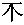 | 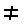 | 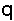 | 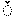 | ||||||
|---|---|---|---|---|---|---|---|---|---|---|
| 【グリフ（テキスト）】 | 𣎴 | ≠ | q | ̌ | ||||||
| 文字文字列 | U+233B4 | U+2260 | U+0071 | U+030C | ||||||
| 符号単位文字列 | D84C | DFB4 | 2260 | 0071 | 030C | |||||
| バイト文字列 | D8 | 4C | DF | B4 | 22 | 60 | 00 | 71 | 03 | 0C |
注記： 文字列は、 書記素クラスタ の並びとして見ることもできる。 書記素クラスタは、 文字文字列 に比して，描画されたテキストにおいて 利用者から知覚される文字の境界に より近似する単位に，テキストを分離する。 書記素クラスタについての論は Unicode 標準, バージョン 4 [Unicode 4.0] の 2.10 節の末尾に与えられている。 公式的な定義は Unicode 標準 Annex #29 [UTR #29] にて与えられる。 Unicode 標準は 既定の 書記素クラスタを定義する。 一部の言語は、この既定をより適切な形にあつらえることを要する。 例えば，スロヴァキア語の利用者からは、書記素クラスタの既定のペア ch が単独の書記素クラスタとして扱われることが望まれるであろう。 文字列内容の言語と末端利用者の選好との間の相互作用は複雑なものになり得ることに注意。 NOTE: It is also possible to view a string as a sequence of grapheme clusters. Grapheme clusters divide the text into units that correspond more closely than character strings to the user's perception of where character boundaries occur in a visually rendered text. A discussion of grapheme clusters is given at the end of Section 2.10 of the Unicode Standard, Version 4 [Unicode 4.0]; a formal definition is given in Unicode Standard Annex #29 [UTR #29]. The Unicode Standard defines default grapheme clustering. Some languages require tailoring to this default. For example, a Slovak user might wish to treat the default pair of grapheme clusters "ch" as a single grapheme cluster. Note that the interaction between the language of string content and the end-user's preferences may be complex.
6.2. 文字列の付番
ソフトウェアの処理が 部分文字列, あるいは文字列の中の一点へのアクセスを必要とし， index — すなわち，数値による文字列の中の “位置” — を利用してそれを行う状況は頻繁にある。 その種の index がウェブ上のコンポーネント間でやりとりされても，ふるまいの一貫性が保たれるためには、文字列の付番（文字列の中の各位置への番号の振り方）について予め合意される必要がある。 文字列の付番のための要件は “文字列の同一性合致検出のための要件” — Requirements for String Identity Matching [CharReq], 4 節 にて論じられる。 主要な問いは２つある： (1) “どのような単位に基づいて数えるか？” (2) “0 か 1 どちらを起点にするか？” There are many situations where a software process needs to access a substring or to point within a string and does so by the use of indices, i.e. numeric "positions" within a string. Where such indices are exchanged between components of the Web, there is a need for an agreed-upon definition of string indexing in order to ensure consistent behavior. The requirements for string indexing are discussed in Requirements for String Identity Matching [CharReq], section 4. The two main questions that arise are: "What is the unit of counting?" and "Do we start counting at 0 or 1?".
前の 6.1 節：文字列の概念 では、文字列が 文字文字列, 符号単位文字列, バイト文字列 として捉えられることを示した。 そのそれぞれが異なる単位に基づく付番を孕んでいる。 The example in the previous section, 6.1 String concepts, shows a string viewed as a character string, code unit string and byte string, respectively, each of which involves different units for indexing.
処理の特定の要件に依存して、数え方の単位は 6.1 節：文字列の概念 にて与えられた，文字列の種々の定義に対応し得る。 特に： Depending on the particular requirements of a process, the unit of counting may correspond to definitions of a string provided in section 6.1 String concepts. In particular:
-
C051[仕様][実装]
文字列の付番は、 文字文字列 に基づくものが推奨される。 C051 [S] [I] The character string is RECOMMENDED as a basis for string indexing.
（例： XML Path 言語 [XPath] ）。 (Example: the XML Path Language [XPath]).
-
C052[仕様][実装]
内部演算の効率性が 文字文字列 に基づく付番に比して大幅に向上する場合は、 符号単位文字列 に基づく文字列の付番が利用されてもよい。 C052 [S] [I] A code unit string MAY be used as a basis for string indexing if this results in a significant improvement in the efficiency of internal operations when compared to the use of character string.
（例： [DOM Level 1] における UTF-16 の利用）。 (Example: the use of UTF-16 in [DOM Level 1]).
-
C071[仕様][実装]
利用者との対話が主要な部分を占めるアプリケーションにおいては、 書記素クラスタ に基づく文字列の付番が利用されてもよい。 C071 [S] [I] Grapheme clusters MAY be used as a basis for string indexing in applications where user interaction is the primary concern.
Unicode 標準 Annex #29, Text Boundaries [UTR #29] を参照。 See Unicode Standard Annex #29, Text Boundaries [UTR #29].
C074[仕様]
書記素クラスタを通して付番を定義する仕様は、次のいずれかにより定義しなければならない： a) Unicode 標準 Annex #29, Text Boundaries [UTR #29] にて定義される既定の書記素クラスタを通して，書記素クラスタを定義する, または b) 付番演算を，より適切な形にあつらえる方法を特に詳細に規定する。 C074 [S]Specifications that define indexing in terms of grapheme clusters MUST either: a) define grapheme clusters in terms of default grapheme clusters as defined in Unicode Standard Annex #29, Text Boundaries [UTR #29], or b) define specifically how tailoring is applied to the indexing operation.
-
C072[仕様][実装]
バイト文字列 に基づく付番は推奨されない。 C072 [S] [I] The use of byte strings for indexing is NOT RECOMMENDED.
数値を通さずに部分文字列を識別しつつ，都合の良い特性を備えるような、特記すべき方法もある。 例えば、文字列合致検出に基づく部分文字列は，小さな編集に対し十全に堅牢であり、文書構造に基づく部分文字列（ XML のような構造的なデータ形式）は，編集に対し, あるいは別の自然言語への翻訳においてすらも，より堅牢である。 It is noteworthy that there exist other, non-numeric ways of identifying substrings which have favorable properties. For instance, substrings based on string matching are quite robust against small edits; substrings based on document structure (in structured formats such as XML) are even more robust against edits and even against translation of a document from one human language to another.
C053[仕様]
部分文字列や 文字列内の一点を識別する方法を必要とする仕様は、この演算を遂行するための，文字列の付番 以外の方法も供するべきである。 C053 [S] Specifications that need a way to identify substrings or point within a string SHOULD provide ways other than string indexing to perform this operation.
C054[実装][内容]
仕様の利用者（ソフトウェア開発者, 内容開発者）は、可能な所では，部分文字列または文字列内の一点を識別するための，文字列の付番 以外の方法を選ぶべきである。 C054 [I] [C] Users of specifications (software developers, content developers) SHOULD whenever possible prefer ways other than string indexing to identify substrings or point within a string.
経験から、個々の文字は，部分文字列の前／後の位置から識別される部分文字列として解された上で処理された方が、より 汎用, 柔軟, 堅牢 な仕様になることが判っている。 index を数え方の単位の狭間の位置と解することで、異なる文字列定義による index にも関連付け易くなる。 Experience shows that more general, flexible and robust specifications result when individual characters are understood and processed as substrings, identified by a position before and a position after the substring. Understanding indices as boundary positions between the counting units also makes it easier to relate the indices resulting from the different string definitions.
C055[仕様]
仕様は、１個の文字を部分文字列として解した上で処理し，選定されている数え方の単位に関わらず， index をその単位の狭間の位置として扱うべきである。 C055 [S] Specifications SHOULD understand and process single characters as substrings, and treat indices as boundary positions between counting units, regardless of the choice of counting units.
C056[仕様]
API の仕様は、１個の文字や１個の “符号化単位” を，引数や返り値の型に指定するべきでない。 C056 [S] Specifications of APIs SHOULD NOT specify single characters or single 'units of encoding' as argument or return types.
例：
仮に “大文字化” 関数 uppercase の返り値型が１個の文字として定義された場合、 uppercase("ß") は，正しい結果（長さ２の文字文字列
SS
）を返せなくなる。
【
現在の Unicode には "ß" の大文字 （ "ẞ" ）もあるので，この例は文脈によっては適切でないかもしれない。
】
また，
3 節：文字の知覚
にて述べたように、文字と，声音／入力 の単位, 等々の間に一対一の対応関係が成り立つとは限らないことにも注意。
EXAMPLE: The function uppercase("ß") cannot return the proper result (the two-character string 'SS') if the return type of the uppercase function is defined to be a single character. Note, also, that there is not necessarily a one-to-one mapping between characters and units of sound, input, etc. as described in 3 Perceptions of Characters.
index の起点，すなわち 0, 1 のいずれから数えるかについて — この問題は、実際には，単位それ自身を数えるか 単位の狭間の位置を数えるかの決定が下された後にのみ，発生する。 The issue of index origin, i.e. whether we count from 0 or 1, actually arises only after a decision has been made on whether it is the units themselves that are counted or the positions between the units.
C057[仕様]
文字列の付番において単位の狭間の位置が数えられる場合、文字列の始端を index 0 と定めることが推奨される。 その場合、最後の index は，文字列に含まれる単位の個数になる。 C057 [S] When the positions between the units are counted for string indexing, starting with an index of 0 for the position at the start of the string is the RECOMMENDED solution, with the last index then being equal to the number of counting units in the string.
7. Unicode 標準や ISO/IEC 10646 を参照するとき
仕様はしばしば， Unicode 標準や国際標準 ISO/IEC 10646 を参照する必要が生じる。 特に，規範として参照するときは、注意深く行われなければならない。 考慮されるべき問いは： Specifications often need to make references to the Unicode Standard or International Standard ISO/IEC 10646. Such references must be made with care, especially when normative. The questions to be considered are:
- どの標準が参照されるべきか？ Which standard should be referenced?
- 特定のバージョンはどのように参照するのか？ How to reference a particular version?
- どのようなときに，バージョン付きのものそうでないものを利用するのか？ When to use versioned vs. unversioned references?
ISO/IEC 10646 は ISO （国際標準化機構）と IEC （国際電気標準会議）の協同により，開発され, 発行された。 Unicode 標準は Unicode Consortium （主要な コンピュータ企業, ソフトウェア製作者, データベースベンダ, 国, 研究機関, 国際的機関, 種々の利用者グループや関心を持つ個人，からなる組織）により開発され，発行された。 Unicode 標準は、 W3C 勧告に相当する位置付けのものである。 ISO/IEC 10646 is developed and published jointly by ISO (the International Organization for Standardization) and IEC (the International Electrotechnical Commission). The Unicode Standard is developed and published by the Unicode Consortium, an organization of major computer corporations, software producers, database vendors, national governments, research institutions, international agencies, various user groups, and interested individuals. The Unicode Standard is comparable in standing to W3C Recommendations.
ISO/IEC 10646 と Unicode 標準は、きっかり同じ 符号化文字集合 (CCS) （同じ レパートリ, 同じ 符号位置 ）と符号化形式を定義する。 それらは、それぞれの技術委員会の間の情報交換やメンバの重なり合いの中で活動的に保守されている。 共同で定義された CCS と符号化形式に加えて， Unicode 標準では［ 文字 特性の規範的な（および参考情報の）一覧, 文字の 等価性／正規化 のための規範的な仕様, 双方向テキストのための規範的なアルゴリズム, 実装に有用な数多の情報 ］も追加している。 要約すると、 Unicode 標準は ISO/IEC 10646 が単に列挙している文字に意味論を追加している。 Unicode 標準への適合は ISO/IEC 10646 への適合も意味する。 [Unicode 4.0] Appendix C を参照。 ISO/IEC 10646 and the Unicode Standard define exactly the same coded character set (CCS) (same repertoire, same code points) and encoding forms. They are actively maintained in synchrony by liaisons and overlapping membership between the respective technical committees. In addition to the jointly defined CCS and encoding forms, the Unicode Standard adds normative and informative lists of character properties, normative character equivalence and normalization specifications, a normative algorithm for bidirectional text and a large amount of useful implementation information. In short, the Unicode Standard adds semantics to the characters that ISO/IEC 10646 merely enumerates. Conformance to the Unicode Standard implies conformance to ISO/IEC 10646, see [Unicode 4.0] Appendix C.
C062[仕様]
一般に、仕様は，利用する文字とそれに結び付けられている意味論を定義する必要があるので、 ISO/IEC 10646 への参照を含めるかどうかに関わらず、 Unicode 標準への参照を含めるべきである。 C062 [S] Since specifications in general need both a definition for their characters and the semantics associated with these characters, specifications SHOULD include a reference to the Unicode Standard, whether or not they include a reference to ISO/IEC 10646.
Unicode 標準への参照を供することにより、実装者は，その標準, および Unicode Consortium ウェブサイトが提供する豊富な情報による恩恵を得られる。 By providing a reference to the Unicode Standard implementers can benefit from the wealth of information provided in the standard and on the Unicode Consortium Web site.
ISO/IEC 10646 と Unicode 標準は（同調的に）発展し続けているので、バージョン付けの課題も生じる： 仕様は、標準の特定のバージョンを参照すべきか？ それとも，規範的な参照が仕様が読まれている時点のバージョンを指すようにするために，総称的な参照にすべきか？ — 一般に、その答えは両者である。 The fact that both ISO/IEC 10646 and the Unicode Standard are evolving (in synchrony) raises the issue of versioning: should a specification refer to a specific version of the standard, or should it make a generic reference, so that the normative reference is to the version current at the time of reading the specification? In general the answer is both.
C063[仕様]
仕様の発行後に割り当てられた文字が，その仕様で利用可能になることが望まれる場合には、 Unicode 標準への総称的参照が含められなければならない。 特定のバージョンに依存する機能がいつでも利用可能, かつ時の経過に伴って変更されないことを確保するために、 Unicode 標準への特定の参照が含められてもよい。 C063 [S] A generic reference to the Unicode Standard MUST be made if it is desired that characters allocated after a specification is published are usable with that specification. A specific reference to the Unicode Standard MAY be included to ensure that functionality depending on a particular version is available and will not change over time.
例えば、 XML 1.0 [XML 1.0] において，構文解析器が名前の妥当性を検証する際に実装しなければならない， Name 文字が受容し得る文字の集合の列挙一覧。 An example would be the set of characters acceptable as Name characters in XML 1.0 [XML 1.0], which is an enumerated list that parsers must implement to validate names.
注記： Unicode 標準の特定のバージョンを参照するための指針については https://www.unicode.org/unicode/standard/versions/#Citations を参照。 NOTE: See http://www.unicode.org/unicode/standard/versions/#Citations for guidance on referring to specific versions of the Unicode Standard.
総称的参照の公式的な方法には，次の２つがある： A generic reference can be formulated in two ways:
- 仕様の参照文献の節に “総称的” 項目を明示的に含ませた上で、単に仕様の本文から，その項目を参照する。 その種の総称的項目には “…これは時の経過に伴い改訂または修正が加えられ得る” のような類いのテキストを含ませる。 By explicitly including a generic entry in the bibliography section of a specification and simply referring to that entry in the body of the specification. Such a generic entry contains text such as "... as it may from time to time be revised or amended".
- 参照文献に “特定的” 項目を含ませた下では、仕様の本文の中で参照を与える所に， “…これは時の経過に伴い改訂または修正が加えられ得るので…” のような類いのテキストを含ませる。 By including a specific entry in the bibliography and adding text such as "... as it may from time to time be revised or amended" at the point of reference in the body of the specification.
これら２つの公式化のいずれが利用されるかは、それぞれの仕様の編集の裁量に委ねられる。
最初の公式化の例は、この仕様の参照文献にて見られる（
[ISO/IEC 10646]
と
[Unicode]
の項目を見よ）。
後者の例は、
[RFC 3629]
と
[RFC 2781]
にて， UCS 符号化方式のための
MIME charset
パラメタに対するバージョン付けについての論も伴われた形で見られる。
It is an editorial matter, best left to each specification, which of these two formulations is used. Examples of the first formulation can be found in the bibliography of this specification (see the entries for [ISO/IEC 10646] and [Unicode]). Examples of the latter, as well as a discussion of the versioning issue with respect to MIME charset parameters for UCS encodings, can be found in [RFC 3629] and [RFC 2781].
C064[仕様]
Unicode 標準 [Unicode] へのすべての総称的参照は、仕様の発行日に利用可能な Unicode 標準の最新のバージョンを参照しなければならない。 C064 [S] All generic references to the Unicode Standard [Unicode] MUST refer to the latest version of the Unicode Standard available at the date of publication of the containing specification.
C065[仕様]
ISO/IEC 10646 [ISO/IEC 10646] へのすべての総称的参照は、仕様の発行日に利用可能な ISO/IEC 10646 の最新のバージョンを参照しなければならない。 C065 [S] All generic references to ISO/IEC 10646 [ISO/IEC 10646] MUST refer to the latest version of ISO/IEC 10646 available at the date of publication of the containing specification.
A. 参照文献
A.1. 参照文献（規範的）
- [IANA]
- Internet Assigned Numbers Authority, Official Names for Character Sets. (See http://www.iana.org/assignments/character-sets.)
- [ISO/IEC 10646]
- ISO/IEC 10646:2003, Information technology -- Universal Multiple-Octet Coded Character Set (UCS), as, from time to time, amended, replaced by a new edition or expanded by the addition of new parts. (See http://www.iso.org/iso/en/ISOOnline.openerpage for the latest version.)
- [MIME-entity]
- N. Freed, N. Borenstein, Multipurpose Internet Mail Extensions (MIME). Part One: Format of Internet Message Bodies, RFC 2045, November 1996, http://www.ietf.org/rfc/rfc2045.txt.
- [MIME-charset]
- Multipurpose Internet Mail Extensions (MIME). Part Two: Media Types, N. Freed, N. Borenstein, RFC 2046, November 1996, http://www.ietf.org/rfc/rfc2046.txt.
- [RFC 2119]
- S. Bradner, Key words for use in RFCs to Indicate Requirement Levels, IETF RFC 2119. (See http://www.ietf.org/rfc/rfc2119.txt.)
- [Unicode]
- The Unicode Consortium, The Unicode Standard, Version 4, ISBN 0-321-18578-1, as updated from time to time by the publication of new versions. (See http://www.unicode.org/unicode/standard/versions for the latest version and additional information on versions of the standard and of the Unicode Character Database).
- [Unicode 3.2]
- The Unicode Consortium, The Unicode Standard, Version 3.2.0 is defined by The Unicode Standard, Version 3.0 (Reading, MA, Addison-Wesley, 2000. ISBN 0-201-61633-5), as amended by the Unicode Standard Annex #27: Unicode 3.1 (see http://www.unicode.org/reports/tr27) and by the Unicode Standard Annex #28: Unicode 3.2 (see http://www.unicode.org/reports/tr28).
- [Unicode 4.0]
- The Unicode Consortium. The Unicode Standard, Version 4.0, Reading, MA, Addison-Wesley, 2003. ISBN 0-321-18578-1. (See http://www.unicode.org/versions/Unicode4.0.0/)
A.2. 他の参照文献
- [CharNorm]
- Martin J. Dürst, François Yergeau, Richard Ishida, Misha Wolf, Tex Texin, Addison Phillips Character Model for the World Wide Web 1.0: Normalization, W3C Working Draft. (See http://www.w3.org/TR/charmod-norm.)
- [CharIRI]
- Martin J. Dürst, François Yergeau, Richard Ishida, Misha Wolf, Tex Texin, Character Model for the World Wide Web 1.0: Resource Identifiers, W3C Candidate Recommendation. (See http://www.w3.org/TR/charmod-resid.)
- [CharReq]
- Martin J. Dürst, Requirements for String Identity Matching and String Indexing, W3C Working Draft. (See http://www.w3.org/TR/WD-charreq.)
- [Connolly]
- D. Connolly, Character Set Considered Harmful, W3C Note. (See http://www.w3.org/MarkUp/html-spec/charset-harmful.)
- [CSS21]
- Bert Bos, Håkon Wium Lie, Chris Lilley, Ian Jacobs, Eds., Cascading Style Sheets, level 2 (CSS2 Specification), W3C Recommendation. (See http://www.w3.org/TR/REC-CSS2.)
- [DOM Level 1]
- Vidur Apparao et al., Document Object Model (DOM) Level 1 Specification, W3C Recommendation. (See http://www.w3.org/TR/REC-DOM-Level-1.)
- [HTML 4.0]
- Dave Raggett, Arnaud Le Hors, Ian Jacobs, Eds., HTML 4.0 Specification, W3C Recommendation, 18-Dec-1997 (See http://www.w3.org/TR/REC-html40-971218.)
- [HTML 4.01]
- Dave Raggett, Arnaud Le Hors, Ian Jacobs, Eds., HTML 4.01 Specification, W3C Recommendation. (See http://www.w3.org/TR/html401.)
- [ISO/IEC 646]
- ISO/IEC 646:1991, Information technology -- ISO 7-bit coded character set for information interchange. This standard defines an International Reference Version (IRV) which corresponds exactly to what is widely known as ASCII or US-ASCII. ISO/IEC 646 was based on the earlier standard ECMA-6. ECMA has maintained its standard up to date with respect to ISO/IEC 646 and makes an electronic copy available at http://www.ecma-international.org/publications/standards/Ecma-006.htm
- [ISO/IEC 9541-1]
- ISO/IEC 9541-1:1991, Information technology -- Font information interchange -- Part 1: Architecture. (See http://www.iso.ch/iso/en/CatalogueDetailPage.CatalogueDetail?CSNUMBER=17277 for the latest version.)
- [ISO/IEC 14651]
- ISO/IEC 14651:2000, Information technology -- International string ordering and comparison -- Method for comparing character strings and description of the common template tailorable ordering as, from time to time, amended, replaced by a new edition or expanded by the addition of new parts. (See http://www.iso.org/iso/en/ISOOnline.openerpage for the latest version.)
- [MathML2]
- David Carlisle, Patrick Ion, Robert Miner, Nico Poppelier, Eds., Mathematical Markup Language (MathML) Version 2.0, W3C Recommendation. (See http://www.w3.org/TR/MathML2.)
- [Nicol]
- Gavin Nicol, The Multilingual World Wide Web, Chapter 2: The WWW As A Multilingual Application. (See http://www.mind-to-mind.com/library/papers/multilingual/multilingual-www.html.)
- [RFC 2070]
- F. Yergeau, G. Nicol, G. Adams, M. Dürst, Internationalization of the Hypertext Markup Language, IETF RFC 2070, January 1997. (See http://www.ietf.org/rfc/rfc2070.txt.)
- [RFC 2277]
- H. Alvestrand, IETF Policy on Character Sets and Languages, IETF RFC 2277, BCP 18, January 1998. (See http://www.ietf.org/rfc/rfc2277.txt.)
- [RFC 2978]
- N. Freed, J. Postel, IANA Charset Registration Procedures, IETF RFC 2978, BCP 19, October 2000. (See http://www.ietf.org/rfc/rfc2978.txt.)
- [RFC 3629]
- F. Yergeau, UTF-8, a transformation format of ISO 10646, IETF RFC 3629, STD 63, November 2003. (See http://www.ietf.org/rfc/rfc3629.txt.)
- [RFC 2781]
- P. Hoffman, F. Yergeau, UTF-16, an encoding of ISO 10646, IETF RFC 2781, February 2000. (See http://www.ietf.org/rfc/rfc2781.txt.)
- [SPREAD]
- SPREAD - Standardization Project for East Asian Documents Universal Public Entity Set. (See http://www.ascc.net/xml/resource/entities/index.html)
- [SVG]
- Jon Ferraiolo, 藤沢 淳 (FUJISAWA Jun), Dean Jackson, Ed., Scalable Vector Graphics (SVG) 1.1 Specification, W3C Recommendation. (See http://www.w3.org/TR/SVG.)
- [UTR #10]
- Mark Davis, Ken Whistler, Unicode Collation Algorithm, Unicode Technical Report #10. (See http://www.unicode.org/unicode/reports/tr10.)
- [UTR #17]
- Ken Whistler, Mark Davis, Character Encoding Model, Unicode Technical Report #17. (See http://www.unicode.org/unicode/reports/tr17.)
- [UTR #29]
- Mark Davis, Text Boundaries, Unicode Standard Annex #29. (See http://www.unicode.org/unicode/reports/tr29 for the latest version).
- [UXML]
- Martin Dürst and Asmus Freytag, Unicode in XML and other Markup Languages, Unicode Technical Report #20 and W3C Note. (See http://www.w3.org/TR/unicode-xml.)
- [XML 1.0]
- Tim Bray, Jean Paoli, C. M. Sperberg-McQueen, Eve Maler, François Yergeau, Eds., Extensible Markup Language (XML) 1.0, W3C Recommendation. (See http://www.w3.org/TR/REC-xml.)
- [XML Japanese Profile]
- MURATA Makoto Ed., XML Japanese Profile, W3C Note. (See http://www.w3.org/TR/japanese-xml.)
- [XPath]
- James Clark, Steve DeRose, Eds, XML Path Language (XPath) Version 1.0, W3C Recommendation. (See http://www.w3.org/TR/xpath.)
B. 文字, キーストローク, グリフの例（参考）
コンピュータにおけるこのようなテキストの複雑さ（そのほとんどが人々の表記体系の複雑さを反映するもの）の全体像の把握に役立つであろう，少数の例を挙げる。 A few examples will help make sense all this complexity of text in computers (which is mostly a reflection of the complexity of human writing systems). Let us start with a very simple example: a user, equipped with a US-English keyboard, types "Foo", which the computer encodes as 16-bit values (the UTF-16 encoding of Unicode) and displays on the screen.
最初はごく単純な例から始める： US-English キーボードを使う利用者が “Foo” とタイプするとする。 コンピュータでは 16-bit 値として符号化され（ Unicode の UTF-16 符号化方式）, スクリーンに表示される。 ↑
| キーストローク | Shift-f | o | o |
|---|---|---|---|
| 入力文字 | F | o | o |
| 符号化文字（16 進バイト値） | 0046 | 006F | 006F |
| テキスト | Foo | ||
唯一，大文字の F を入力するために修飾キー（ Shift ）を利用する所だけ、単純でない。 The only complexity here is the use of a modifier (Shift) to input the capital 'F'.
もう少し複雑な例を示す。 利用者が伝統的カナダ・フランス語キーボードで çé （ ¸cé ）をタイプしたとする（ここでも，コンピュータ上では UTF-16 に符号化されて表示されるとする）。 ここでは、このコンピュータが UTF-16 の合成済形式（ fully composed form ）を利用しているとする。 A slightly more complex example is a user typing 'çé' on a traditional French-Canadian keyboard, which the computer again encodes in UTF-16 and displays. We assume that this particular computer uses a fully composed form of UTF-16.
| キーストローク | ¸ | c | é |
|---|---|---|---|
| 入力文字 | ç | é | |
| 符号化文字（16 進バイト値） | 00E7 | 00E9 | |
| テキスト | çé | ||
注目される点が少しばかりある： まず，利用者がセディーユ（ ¸ ）をタイプしても、キーボードドライバの状態が変化することを除いて，何も起きない — セディーユは デッドキー である。 続いて，ドライバにてキーストローク c が検知されると、１個の 16-bit 符号単位 として表現される完全な文字 ç がシステムに供され，グリフ ç が表示される。 次に，利用者が専用の é キーを押し下げた場合も、２個のバイトで表現される１個の文字になる。 ほとんどのシステムでは，これを１個のグリフで表示するが、２個のグリフの組（基底 字とアクセントマーク）から同じ描画を得る手法もあり得る。 A few interesting things are happening here: when the user types the cedilla ('¸'), nothing happens except for a change of state of the keyboard driver; the cedilla is a dead key. When the driver gets the c keystroke, it provides a complete 'ç' character to the system, which represents it as a single 16-bit code unit and displays a 'ç' glyph. The user then presses the dedicated 'é' key, which results in, again, a character represented by two bytes. Most systems will display this as one glyph, but it is also possible to combine two glyphs (the base letter and the accent) to obtain the same rendering.
日本語の例： 利用者が ローマ字入力メソッド を利用して “日本語” （ U+65E5, U+672C, U+8A9E ）とタイプし，コンピュータ上では、 UTF-16 に符号化されて表示されるとする。 On to a Japanese example: our user employs a romaji input method to type '日本語' (U+65E5, U+672C, U+8A9E), which the computer encodes in UTF-16 and displays.
| キーストローク | n i h o n g o <space> <return> | ||
|---|---|---|---|
| 入力文字 | 日 | 本 | 語 |
| 符号化文字（16 進バイト値） | 65E5 | 672C | 8A9E |
| 表示（画像） | 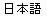 | ||
| 【表示（テキスト）】 | 日本語 | ||
ここで注目される点は入力である： 利用者がタイプした Latin 文字は、まず（ここには示されないが）その場で仮名に変換される。 利用者は望むだけ space キーを押し下げて，それを変換する。 最終的に 利用者が return キーを押し下げたとき，その漢字の文字がアプリケーションに送信される。 この３文字は自明な形では生成されず，それまでには９回のキーストロークを要し、それが符号化され, 表示される。 The interesting aspect here is input: the user types Latin characters, which are converted on the fly to kana (not shown here), and then to kanji when the user requests conversion by pressing <space>; the kanji characters are finally sent to the application when the user presses <return>. The user has to type a total of nine keystrokes before the three characters are produced, which are then encoded and displayed rather trivially.
アラビア語 用字系の下でのペルシャ語では，また異なる様相を呈する： A Persian example, using Arabic script, will show different phenomena:
| キーストローク（画像） | 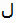 | 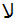 | 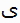 | |||
|---|---|---|---|---|---|---|
| 【キーストローク（テキスト）】 | ل | ا | ﻻ | ی | ی | |
| 入力文字 | ل | ا | ل | ا | ی | ی |
| 符号化文字（16 進バイト値） | 0644 | 0627 | 0644 | 0627 | 06CC | 06CC |
| 表示（画像） | 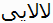 | |||||
| 【表示（テキスト）】 | لالایی | |||||
ここでは最初の２回のキーストロークそれぞれが１個の入力文字を経て１個の符号化された文字を生成するが、そのペアは１個のグリフとして表示される（ '', 合字 lam-alef）。 次のキーストロークは，一部のアラビア語用字系キーボードに備わる lam-alef であり，１回のキーストロークで同じ２個の文字を生成し，前と同じように表示される。 この２番目の lam-alef は、表示の際には，最初のものの左に置かれる。 最後の２回のキーストロークは２個の同一の文字を生成するが，２個の異なるグリフで描画される（中字形（ medial form ）に後続して，その左に尾字形（ final form ））。 したがって、５回のキーストロークから６文字が生成され，４個のグリフが右から左へ配置される。 Here the first two keystrokes each produce an input character and an encoded character, but the pair is displayed as a single glyph ('', a lam-alef ligature). The next keystroke is a lam-alef, which some Arabic script keyboards have; it produces the same two characters which are displayed similarly, but this second lam-alef is placed to the left of the first one when displayed. The last two keystrokes produce two identical characters which are rendered by two different glyphs (a medial form followed to its left by a final form). We thus have 5 keystrokes producing 6 characters and 4 glyphs laid out right-to-left.
最後にタミル語の例。 ISCII キーボードでタイプされ，新たな様相が見られる： A final example in Tamil, typed with an ISCII keyboard, will illustrate some additional phenomena:
| キーストローク（画像） | 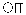 | 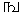 | 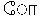 | |||
|---|---|---|---|---|---|---|
| 入力文字 | ட | ா | ங | ் | க | ோ |
| 符号化文字（16 進バイト値） | 0B9F | 0BBE | 0B99 | 0BCD | 0B95 | 0BCB |
| 表示（画像） | 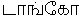 | |||||
| 【表示（テキスト）】 | டாங்கோ | |||||
ここでは入力自体は素直であるが、前掲のアクセントマーク付きの Latin の例とは逆に，ヴィラーマ ダイアクリティカルマーク ் (U+0BCD) が，その適用対象の ங (U+0B99) の後に入力される。 また、最後の２個の文字の描画が特徴的である： 最後のもの ோ (U+0BCB) は明らかに２個のグリフからなり，最後の手前の文字 க (U+0B95) のグリフを囲っている。 Here input is straightforward, but note that contrary to the preceding accented Latin example, the virama diacritic '்' (U+0BCD) is entered after the 'ங' (U+0B99) to which it applies. Rendering is interesting for the last two characters. The last one 'ோ' (U+0BCB) clearly consists of two glyphs which surround the glyph of the next to last character 'க' (U+0B95).
C. テキストの例（参考）
次の一覧は、この文書で画像により例示された文字列または文字のテキストバージョンである。 これらは、テキストのカット＆ペーストの便宜のために用意されている。 The following are textual versions of strings or characters used in image-based examples in this document. They are provided here for the benefit of those who want to cut and paste the text for their own testing.
| 節 | 例示画像 | テキスト |
|---|---|---|
| 3.3 節 | عدد مارس ١٩٩٨ | |
| 6.1 節 | 𣎴≠q̌ | |
| 付録 B | 日本語 | |
| 付録 B | 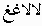 | لالاغغ |
|
【 直上の画像／テキストはおそらく原文の誤り： 一部の文字の符号位置／示されている画像が 本文のもの（テキスト： لالایی ）と食い違っている。 】 | ||
| 付録 B | டாங்கோ | |
D. 適合性基準の一覧（参考）
以下に、文書順に並べられたこの仕様の適合性基準を挙げる。 仕様／実装／内容は、この仕様への適合性を検査する際に，この一覧を利用できる。 This is a list of the conformance criteria in this specification, in document order. This list can be used to check specifications, implementations, and content for conformance to this specification.
【 このページの初期状態では、一覧は未表示： 次のボタンで表示の有無を 。 】
その際には，次の事項が念頭に置かれるべきである： When doing so, the following points should be kept in mind:
- 最初に文書全体をよく読んで意味を把握しておくこと。 この一覧は、テキストの本文の文脈の下で これらの適合性基準を読んだ上で，初めて、早見表の用をなす。 To ensure that you understand the meaning, read the whole document first. Use this list as a quick reference only after having first read the conformance criteria in context in the main body of the text.
- この一覧の適合性基準の意味が、それを囲んでいる，この文書の本文テキストを読んだ上でも明らかでないのであれば、 www-i18n-comments@w3.org （ 公開アーカイブ ）宛までコメントを寄せることも考慮されたし。 If the meaning of a conformance criterion in this list is still unclear after referring back to the surrounding text in the main body of the document, consider sending a comment to www-i18n-comments@w3.org (publicly archived).
- すべての適合性基準が，すべての仕様／実装／内容に適用されるわけではない。 実際の適合性を検査する前に，適用し得るものかどうか検査されるべきである。 例えば C010 は，仕様に対してのみ適用される。 別の例として， C002 は 仕様／実装／内容 いずれにも適用されるが、それは 文字と表示されるテキストの単位との対応関係が扱われる場合に限られる。 Not all conformance criteria apply to all specifications, implementations, or content. Before checking for actual conformance, applicability should be checked. As an example, C010 only applies to specifications. As another example, C002 applies to specifications, implementations, and content, but only if it deals with mapping between characters and units of displayed text.
E. 勧告案からの変更点（参考）
- 参照文献節の少数のリンクと参照が更新された。 A small number of links and references were updated in the references section.
-
C076 の後の段落における明確化のための小さな編集上の修正：
“したがって、例えば，実際には iso-8859-1 に符号化されるものとは異なる
用字系／文字／記号
を表現する目的で
iso-8859-1 で符号化されるレパートリISO Latin 1 文字集合の符号位置 を誤利用するようなフォントの構築などは禁止される。” Minor editorial change to paragraph after C076 to clarify: "This prohibits, for example, the construction of fonts that misuse the repertoire encoded by iso-8859-1 to represent different scripts, characters, or symbols than what is actually encoded in iso-8859-1." changed to "This prohibits, for example, the construction of fonts that misuse the codepoints in the ISO Latin 1 character set to represent different scripts, characters, or symbols than those actually encoded in iso-8859-1.".
F. 謝辞（参考）
（敬称略） URI の節に対する重要な詳細を供された Tim Berners-Lee と James Clark に。 制作と編集の処理に多大な補助を与えてくれた Asmus Freytag , Addison Phillips, 早期の段階での Ian Jacobs に。 有益なコメントと示唆を供された，多くの方々と W3C の I18N WG と IG に。 Tim Berners-Lee and James Clark provided important details in the section on URIs. Asmus Freytag , Addison Phillips, and in early stages Ian Jacobs, provided significant help in the authoring and editing process. The W3C I18N WG and IG, as well as many others, provided many helpful comments and suggestions.